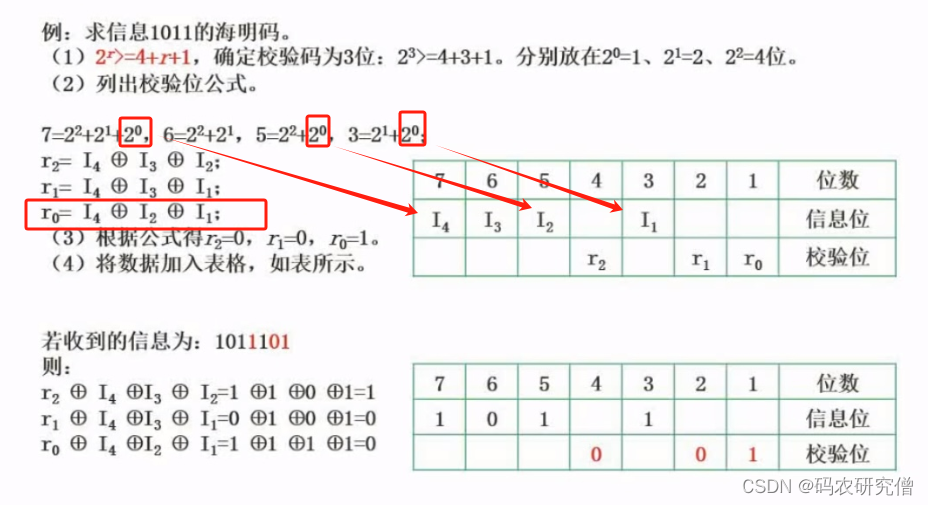

数据链路层
PPP帧
广域网的帧
最大长度：5B+1500B+3B=1508B
没有最短帧，点对点，地址固定
802.11帧
最大长度：30B+2312B+4B=2346B
采用 CSMA/CA 协议，三个MAC地址
以太网帧（802.3）
最大长度：14B+1500B+4B=1518B
最短帧长64B，即数据最少为 46B，采用CSMA/CD协议
两个MAC地址
不需要帧结束定界符，因为 CSMA/CD 协议发送完必须要等一小段时间
网络层
IPv4
首部长度最短 20B，且必为 4B 的倍数
首部中，首部长度、总长度、片偏移的单位分别为 4B、1B、8B
需要分片时，除最后一个片，其它的片的数据长度均为 8B 的倍数，且数据+首部总长度不超过 MTU
传输层
UDP
面向报文（不拆分报文）
首部为8B
TCP
全双工，面向字节，一对一，有连接
首部最短为 20B，且必为 4B 的倍数
seq为本次发送数据的第一个字节，ack为期望对方发送的下一个字节（ack-1的字节均已收到）
第三握可以携带数据
服务器第二、三挥可以同时进行
数据链路层
PPP、HLDC、帧中继、SLDC
网络层
ARP：地址解析
ICMP
网际报文控制协议，用于报告IP数据报传输时出现的差错
RIP 和 OSPF
IGMP：因特网组管理协议
传输层
NAT：传输层协议
应用层
DNS：53号端口，C/S模式，使用 UDP
FTP：C/S模式，使用 2 个TCP
DHCP：应用层协议
BGP：边界网关协议，应用层协议，基于TCP
注意看图，可能藏了一些信息，如：路由器某端口可能占了一个IP，这时问你某子网还能分配几个IP，就很阴间
滑动窗口序号和 seq、ack 是不同的，GBN 和 SR 都是对帧进行编号，帧编号一旦到了编号末尾，就从0重新开始
$最大信道利用率=(窗口大小 * A每帧发送时间T_d)/(RTT+A的Td+B的Td)$
报文交换必须让 A 发完后，路由器才能传输，而分组交换，可以用类似流水线的思想，路由器收到一个分组即可马上发出去
$数据传输率=波特率 * log_2v$，奈氏定理中波特率为$2w$
数据传输率≠信道利用率，而是$信道带宽 * 信道利用率$，别搞混。此外是否求“有效”传输率，例如 MAC 帧最长1518B 有效只有1500B
默认路由是0.0.0.0/0，掩码也是全0，连接互联网的路由只能是默认路由
注意是否需要连接的时间消耗，注意题目关键点如“已连接”或“从发出图中所示Web请求开始”
NAT 路由器将改变源IP地址
路由器转发往往也要发送时间，因此单链路和有多个路由器不一定相同
常用端口全为服务端。若选择题中说的是某客户端的xx端口，则是错的
GBN发送窗口最大$2^{n}-1$，因此发送帧的序号为$0\sim2^n-1$，但一开始只有$0\sim 2^n-2$在发送窗口内。例如2bit序号，则帧序号为0123,0123...但最开始只能发012这三帧
没说每帧单独确认，默认采用累积确认（含捎带）
RTT是往返
网络中只有路由器才算结点
帧越长，信道利用率越高，因此信道利用率最低应按最短帧长来算
就算 HTTP 中的 TCP 能并行，也必须先请求 web，再请求 web 内的文件
从组成部分
硬件：包含主机、通信链路、交换设备、通信处理机等
软件：多属于应用层
协议：是计算机网络的核心
从工作方式
边缘部分
由连接到 Internet 的、供用户直接使用的主机构成，用来通信和资源共享
核心部分
由大量的网络和连接这些网络的路由器组成，为边缘部分提供服务
从功能组成
通信子网
由各种传输介质、通信设备和网络协议组成，实现了联网计算机的通信
拓扑结构主要取决于通信子网
资源子网
是实现资源共享的设备及其软件的集合，提供了资源
数据通信（最基本、最重要）、资源共享、分布式处理、提高可靠性、负载均衡
按范围
广域网 WAN
实现长距离通信，是因特网的核心部分，使用交换技术，也称远程网
其交换机和链路的通信容量大
城域网 MAN
大多采用以太网技术
局域网 LAN
使用广播技术
一般用微机或工作站通过高速线路相连，覆盖范围小
个人区域网 PAN
也称无线个人区域网 WPAN，覆盖范围最小
按传播技术
广播式网络
所有联网的计算机共享一个公共信道
当一台计算机通过共享信道发送报文时，其它计算机都能收听到，并通过检测目的地址来决定是否接收
局域网 LAN 就是广播式
点对点广播
每条线路连接一对计算机，若没有直接线路相连，就要通过中间节点进行转发
广域网 WAN 基本是点对点网络
按拓扑结构
总线形
使用单根线将所有计算机连接起来
星形
每个终端都以单独的线路和中央设备相连
中心也算一个结点
环形
所有计算机接口连成一个环
最典型的例子就是令牌环局域网
网状
每个结点至少由两条路径和其它结点相连
多用在广域网上
按使用者
公用网：电信公司出资建造的大型网络
专用网：某个部门为满足本单位特殊业务而建造
按交换技术
电路交换网络
在源节点和目的结点之间建立一条专用的通路用于传输数据，不需要地址等额外信息
包括建立连接、传输数据、断开连接三个阶段
特点是整个报文的比特流连续地从源点直达终点，好像在一条管道中传输
报文交换网络
用户数据加上源地址等信息，封装成报文，整个报文发送到相邻结点，全部存储后再转发给下一个结点
也称存储 - 转发网络，注意和分组交换网络区别
分组交换网络
将数据分成较短的固定长度的数据块，在每个数据块中加上目的地址、源地址等信息组成分组，以存储 - 转发的形式传输
目前主流网络都是分组交换网络
虚电路是分组交换的一种，同样采用分组转发；“虚”表明它是逻辑上的、不专用的电路
带宽
即最高传输速率，单位 $b/s$
带宽本意是表示线路所允许通过的信号频带范围，单位 $Hz$
时延
指一个报文或分组从网络的一段传送到另一端所需要的总时间
发送时延
结点将分组的所有比特推向传输链路所需要的时间，即从第一个比特开始发送，到该分组最后一个比特发送完毕的时间
$发送时延=\frac{分组长度}{信道宽度(发送速度)}$
传播时延
电磁波在信道中传输的时间，是一个比特从一端到另一端的时间
$传播时延=信道长度 / 传播速率$
处理时延
在交换结点为存储转发而花费的必要时间，如分析报文首部等
排队时延
分组进入路由器后要排队，等待转发
做题时，处理时延和排队时延一般不考虑。对于高速链路，提升的是发送速率，减少的是发送时延，而对传播时延没有太大影响
时延带宽积
指第一个比特到达终点时，发送端已经发送多少个比特了，单位比特
也称以 bit 为单位的链路长度
$=单向时延 * 信道带宽$
往返时延 RTT
即发送端发送出一个分组，到发送端收到回信总共经历的时间，$RTT=2 * 传播时延$
吞吐量
单位时间通过某个网络（或信道、接口）的数据总量
速率
也就是信道传输数据的速度，其最高值为带宽
速率是传输的实际速度，而带宽为理想速度
信道利用率
信道有百分之多少的时间是有数据通过的
计算
链路带宽仅影响发送时延，传播时延要么题中直接告诉，要么通过时延带宽积算出来
分组转发A到B的时间：$前 n-1 个发送时延+最后一个发送时延+最后一个传播时延$
网络分层结构
体系结构：计算机网络的各层及其协议的集合
实体：任何可发送或接收信息的硬件或软件
对等实体：不同机器上同一层称为对等层，同一层的实体称为对等实体
PCI
Protocol control information协议控制信息，即控制协议操作的信息，第 n 层的PCI记为 n-PCI
SDU
Service data unit服务数据单元，是为完成某些功能而要求传输的数据
PDU
Protocol data unit协议数据单元，对等实体之间传输的数据单元，是 SDU + PCI
物理层称为比特，数据链路层称帧，网络层称分组，传输层称为报文段
下一层将上一层的 PDU 作为 SDU，并且装上本层的 PCI，即封装成本层的 PDU
网络分层需要层与层之间交流尽可能少，且上层单向使用下层提供的服务
上一层只能使用下一层的服务，而不能直接使用其他层的服务，下一层的服务实现的细节对上一层透明
网络通信时，对等层在逻辑上存在一条信道
重要概念
协议Protocol
是规则的集合，且只有对等实体之间存在协议，即协议是水平的
协议由语法（规定数据传输格式）、语义（规定所要完成的功能）、同步（规定事件实现顺序）三者组成
接口
第 n 层和 n+1 层之间交换信息的连接点，是一个系统内部的规定
不能跨层定义接口
相邻两层的结点通过服务访问点 SAP 进行交互，它是一个逻辑接口
服务
下层的为紧邻的上层提供的功能调用，是垂直的
服务原语：上层使用下层所提供的服务时必须与下层交换的一些命令
有应答服务包含全部的 4 种原语，而无应答只有请求和指示两种原语
OSI模型
物理层
传输单位是比特，功能是在物理媒体上为数据端设备透明的传输原始比特流
物理层包含 EIA-232C、CCITT 的 X.21 等协议
主要研究
通信链路和通信结点的连接需要哪一些电路接口，物理层规定了这些接口的一些参数
物理层也规定了通信链路上传输信号的意义和电气特性
注意传输信息用到的一些物理媒体，如双绞线、无线信道等不属于物理层
数据链路层
传输单位是帧，主要任务是将网络层传来的IP数据包封装成帧，提供点到点的通信
功能
成帧、差错控制、流量控制和传输管理
差错控制可以检测出传送过程中出现的差错，并丢弃这些帧
流量控制可以协调两个结点的速率，使 A 结点的发送速率恰好是 B 结点的接收速率
广播式网络在数据链路层还要控制如何对共享信道的访问，数据链路层一个特殊子层：介质访问子层MAC就是专门处理这个问题的
数据链路层典型协议：SDLC、HDLC、PPP、STP 和帧中继等
网络层
传输单位是数据报，关心的是通信子网的运行控制，主要任务是把网络层的 PDU（分组）传送到目的地址
功能
流量控制：和数据链路层的功能一致
路由选择：当有多条可供选择的路由，必须根据网络状况，选择最合适的一条路径
拥塞控制：缓解网络中出现的拥塞情况，拥塞会导致大量分组的丢弃
差错控制
是两个结点之间约定的检错规则，如奇偶校验码，不能纠错的就丢弃，保证向上提交的数据都是正确的
其主要协议为 IP 协议，此外还有 IPX、ICMP、IGMP、ARP、RARP 等
支持无连接和面向连接的通信
传输层
传输单位是报文段（TCP）或用户数据报（UDP），负责主机中两个进程之间的通信，功能是为端到端连接提供可靠的传输服务，主要有端到端的差错控制、流量控制、服务质量、数据传输管理等
数据链路层提供点到点的通信，而传输层是端到端的通信，点代表一个主机，而端代表一个进程
复用和分用
复用是多个应用层进程可以同时使用下面传输层的服务
分用是传输层把收到的信息分别交付给适当的应用层进程
仅支持面向连接的通信
会话层
允许不同主机上各个进程之间进行会话，也称建立同步 SYN
利用传输层提供的端到端服务，向表示层提供它的增值服务
表示层
主要处理在两个通信系统中交换信息的表示方式
采用抽象的标准方法定义数据结构，并采用标准的编码形式
数据压缩、加密和解密也是表示层可提供的
应用层
是最高层，是用户与网络的界面，最复杂，使用的协议也最多，例如 FTP、SMTP、HTTP 等
TCP / IP模型
网络接口层
类似于物理层和数据链路层
网际层
即主机 - 主机的网络，是 TCP / IP 体系中关键部分，总体和 OSI 协议的网络层类似
只支持无连接的通信
定义了标准的分组格式和协议，即 IP
传输层
同样和 OSI 中传输层类似，使得发送端和目的端主机中对等实体进行会话
TCP协议
传输控制协议，是面向连接的，数据传输单位为报文段，提供可靠传输
UDP协议
用户数据报协议，是无连接的，数据传输单位为用户数据报，不保证可靠传输
应用层
包含所有高层协议，如 DNS、Telnet（虚拟终端协议）、HTTP 等
两种模型的比较
相似
二者都采用类似的分层体系，都基于独立的协议栈概念，都能解决异构网络的互联
差别
OSI 最大贡献是定义了服务、协议、接口三个概念
OSI 在网络层支持无连接和面向连接的通信，在传输层只有面向连接的通信；而TCP/IP模型认为可靠性是端到端的问题，在网际层只有一种无连接的通信，但传输层支持无连接和面向连接的通信，两者刚好相反
学习中使用的模型
五层模型体系，即将TCP/IP的网络接口层划分为数据链路层和物理层
信号
模拟信号：连续变化的数据，抗干扰能力更强
数字信号：取值为离散值的数据
数据传输
分为串行和并行传输
远距离传输一般采用串行传输，因为并行传输容易受干扰
计算机内部常采用并行传输，互联网一般是串行传输
码元
指用一个固定时长的信号波形（数字脉冲）来表示一个 k 进制数字，该时长称为码元宽度，
1 码元可以表示若干比特的信息量，若使用二进制编码，1个码元就是1比特数据（0或1）
信源和信宿：分别表示数据的发送者和接收者
信道
信道是信号的传输媒介，是逻辑上的一条通路，信道是单向的
往往包含一条发送信道和接收信道，因此可以进行双向通信
类型
模拟信道：传输模拟信号的信道
数字信道：传输数字信号的信道
信号传输方式
基带传输（数字信号）
将数字 0 和 1 直接用两种不同的电压表示，然后送到数字信道上传输，该信号称为基带信号
近距离、不用调制，常用于局域网
频带传输（模拟信号）
将基带信号进行调制后形成频分复用模拟信号，送到模拟信道上传输
长距离、需要调制，常用于广域网和无线传输
频带传输可将链路总容量划分为多个信道，每个信道携带不同的信号，此即宽带传输，宽带传输中所有信道可以同时互不干扰地传输信息，增加链路容量
通信交互方式
单向通信
只有一个方向上的通信，只需要一条信道
半双工通信
双方都可以发送和接收信息，但任何一方都不能同时发送或接收信息
需要两条信道
全双工通信
双方可以同时发送和接收信息
需要两条信道
极限容量
信道最高码元传输速率或极限信息传输速率
信息的速率
速率
也称数据率，指数据传输速率，是单位时间内传输的数据率，单位为比特 bit
波特率
即码元传输速率，是单位时间内传输的码元个数，单位为波特Baud
波特率和进制数无关
1 个码元中可以存储一个或多个比特，具体看进制数，若二进制编码，则波特率等于速率
带宽
指某个网络中的最高数据率，单位为 $b / s$
信号传输定理
奈奎斯特定理
码间串扰
信号中许多高频分量在传输中会衰减，导致接收端收到的信号波形失去码元之间的界限
在理想低通（无噪声、带宽有限）的信道中，为避免码间串扰，极限码元传输速率为 2W 波特，W 为信道带宽（或每秒采样次数）
若用 V 表示码元的种类数，则$极限数据传输率为=2Wlog_2V$，也就是$极限波特率 * 一个码元能表示的比特数$
V 也可以指信号的级数，如 8 级就代表 8 种状态
香农定律
给出了带宽受限且有高斯白噪声影响的信道极限数据传输率，为：$Wlog_2(1+S/N)$，其中 S 为信道传输信号的功率，N 为信道噪声的功率，$信噪比=10log_{10}(S/N)$
$S/N$ 就是信噪比，但没有单位，而取对数再乘10是化为了分贝为单位，两者等价，但计算时不取单位
表明了一个码元对应的二进制位数是有限的
编码与调制
数据变换为模拟信号，称调制；将数据变换为数字信号，称编码
数字数据编码为数字信号
传输的第一个码元遵循高1低0
归零编码 RZ
用高电平代表数据1，用低电平代表数据0（高1低0+归零）
每个时钟周期的中间均跳变到低电平（归零），这是为了传输双方的自同步机制，但传输效率受到了影响
归零只有是高电平的时候，才会在后半段归0，低电平本身就是0，不用变
非归零编码NRZ（高1低0）
和RZ唯一的区别就是不用归零，但双方难以同步
反向非归零编码 NRZI（同1异0）
与 NRZ 的区别就是用信号的翻转代表0，信号不变表示1，同1异0
如果都是0则一直翻转，如果都是1则一条直线
曼彻斯特编码（高1低0）
将一个码元分为两个相等的间隔，前高后低表示1，前低后高表示0
占用的频带宽度是原始基带宽度的2倍，即编码效率只有50%（2个波特1bit），但便于同步
以太网使用的就是曼彻斯特编码
差分曼彻斯特编码
第一个码元同样是高低为1，低高为0
第二个码元开始，前半码元与前一个码元的后半部分，同1异0
可以实现自同步，且抗干扰性较好，常用于局域网传输
4B/5B编码
将要发送的数据流 4个bit 为一组，然后按本编码的编码规则将其转化为五位码
五位码共32个组合，但只选用其中16个作为数据，其它16种作为控制码（帧开始与结束等）
数字数据调制为模拟信号
在发送端将数字信号转化为模拟信号，在接收端将模拟信号还原成数字信号，分别对应调制解调器的调制和解调过程
ASK幅移键控（调幅）
通过改变载波信号的振幅表示0和1，而载波的频率和相位都不改变
$sin(x+t)$，这个 t 就是相位
一般有振幅就代表1，没有振幅一根线就是0
nASK数据传输率为$2Wlog_2n$
FSK频移键控（调频）
通过改变载波信号的频率表示0和1
PSK相移键控（调相）
通过改变载波信号的相位表示0和1
QAM正交振幅调制
在频率不变的情况下，将ASK和PSK结合起来，形成叠加信号
数据传输速率$R=Blog_2(mn)$，B波特率，m相位个数、n振幅个数，无噪信道$B=2w$
有多少种信号的可能，取个 2 的对数就是一个码元所能携带的 2 进制位数
QAM-64 即表示$mn=64$，即64种信号的可能
模拟信号编码为数字信号
包含
采样
对模拟信号进行周期性的扫描，把时间上的连续信号变成离散的信号
奈奎斯特采样定理：采样频率必须大于原始信号最大频率的两倍才能完整保留信号
量化
把采样得到的电平按照一定的分级标度转化成对应的数字，并取整数
编码
把量化的结果转换成与之对应的二进制编码
模拟数据调制为模拟信号
交换技术
电路交换
直通方式，需建立一条物理电路，双方独占
电路建立后，电路上任何结点采取直通方式，不存在转发，通信时延小，没有冲突，有序传输
报文交换
数据交换的单位是报文，报文携带目标地址等信息，采用存储转发的传输方式
无需建立连接，动态分配线路，线路利用率较高
分组交换
将报文划分为合理的小块，构成分组，支持流水线技术
无建立时延，减少了出错概率，但存在转发时延，可能出现报文顺序错乱、丢失等问题
方式（均由网络层提供）
数据报方式
无连接方式，不需要建立连接，不保证可靠传输，不独占线路
不同分组可走不同的路径、按不同的顺序抵达，到达后再还原
虚电路
在发送之前，双方需建立逻辑上的一条线路，不需要预分配带宽
虚电路的路由体现在虚电路建立阶段，一旦建立就固定了虚电路对应的物理路径，且不再使用目的地址，而是使用虚电路标识符
端系统每次建立虚电路时，选择一个未使用过的虚电路号分配给该虚电路
保证了可靠传输、正确有序抵达，即可靠性由网络保证
可同时双向发送数据
虚电路有两种形式，只有一种是临时的
传输介质是物理通路，而不是物理层，它位于物理层下面
种类
双绞线
绞合可以减少对相邻导线的电磁干扰
屏蔽双绞线 STP
在外层加了一层屏蔽层，可进一步提高抗电磁干扰能力
非屏蔽双绞线 UTP
同轴电缆
50Ω 同轴电缆
又称基带同轴电缆，主要传输基带信号
75Ω 同轴电缆
又称宽带同轴电缆，主要传输宽带信息
光纤
带宽极大
原理是光的全反射，光纤不是中空的
可不受电磁干扰和噪声干扰
多模光纤是将不同入射角度的多条光纤在一根光纤中传输，但只适合近距离传输
单模光纤是将光纤的直径减少到一个光的波长，让单条光纤传输，适合远距离通信
无线传输介质
无线电波、微波、红外线和激光等
物理层接口的特性
机械特性
指明接口所用接线器的形状、引脚数量等
电气特性
指明接口线缆各条线的电压范围
功能特性
指明某一电平的电压表示的含义
过程特性
指明不同事件需要的执行顺序
接口标准：EIA RS-232-C、ADSL、SONET/SDH 等
中继器
对数字信号整形并放大，能扩大网络范围
原理：信号再生，而不是简单的放大
不能连接不同速率的局域网
中继器两端必须使用同一个协议，如果网络设备有存储转发功能，就能连接两个不同协议
放大器是放大模拟信号，原理是信号放大，而中继器放大的是数字信号，原理是整形再生
集线器
本质为多端口的中继器，只能工作在半双工方式
只起信号放大和转发作用，能扩大网络的传输范围，是一个共享式设备
同时只能有一个端口输入，将整形后的信号发送到除输入端口外其他所有端口
每个端口连接是同一个网络的不同网段，也就是没有划分网络的功能，不能分割冲突域
集线器的总带宽是所连接的所有计算机的带宽之和，如$10MB/S$的集线器连了5台电脑，则每台电脑的带宽为$10/5=2MB/S$
为网络层提供服务
无确认的无连接服务
源机器发送数据帧时不需要建立链路连接，目的机器收到数据后不需要发回确认
对于丢失的帧，数据链路层不负责重发，而交给上层处理
适用于实时通信，如以太网
有确认的无连接服务
源机器在规定时间内未收到确认帧时，将重发这一帧
适用于误码率较高的网络，如无线通信
有确认的有连接服务
帧传输需要三步骤：建立数据链路、传输帧、释放链路
目的机器每收到一帧，就要给出确认，源机器必须收到确认后才能传送下一帧
可靠性最高，适用于对通信质量要求高的场合
有连接就一定有确认，但有确认可以无连接
链路管理
该层的链路的建立、维持、释放的过程称为链路管理
帧定界
帧的首部和尾部中包含很多控制信息，其一个重要功能就是确定帧的界限
在 HDLC 协议中，使用标识位F（01111110）来标识帧的开始和结束，第一次检测到 F 标识帧的开始，下一次就是标识帧的结束
帧同步
接收方能够在连续的数据流中，辨识每一帧的开始和结束
定界是发送方的责任，而同步是接收方的责任
透明传输
如果在数据中出现与帧定界符相同的的比特组合，会错误以为该帧传输结束了，将丢弃后面的数据，此即透明传输问题
简单来说，透明传输指无论什么样的比特组合，都能在链路上作为数据部分传送
流量控制
可能出现发送方发送能力大于接收方接收能力，若不限制发送方的速率，将造成帧的丢失
本质就是控制发送方的速率，使其不超过接收方的接收能力
不是数据链路层特有的功能，许多高层也提供该功能，只是控制的对象不同：数据链路层控制的是相邻两结点之间的数据链路上的流量；传输层控制源端到目的端之间的流量
注意，OSI 将流量控制放在数据链路层，而 TCP / IP 将其放在传输层
差错控制
使发送方确定接收方是否正确收到所发送的数据的方法，称为差错控制
类型
位错
指帧中某些 bit 出现了差错
采用循环冗余校验 CRC 的方式发现位错，通过自动重传请求ARQ的方式来重传出错的帧
让发送方将要发送的数据帧附加一定的 CRC 冗余检错码一并发送，接收方根据检错码对数据帧进行错误检测，若发现错误则丢弃该帧，使发送方未在规定时间内收到回复，因而重传该帧
帧错
指帧的丢失、重复、失序等
在数据链路层引入定时器和编号机制
提高信噪比可减弱随机差错（如底噪）
即按照一定的规则，将网络层提交的分组封装成帧，组帧必须添加首部和尾部
目标为帧定界、帧同步、透明传输
字符计数法
在帧头部用 1 个计数字段表明该帧的总长度（该总长度包含计数字段自身所占的1字节）
如果计数字段丢失，则失去了帧边界的划分依据
字符填充的首尾定界法
用特殊字符表明帧的开始和结束
SOH 放在帧的最前面标识帧的首部开始、EOT 放在最后面标识帧的结束、ESC 是转义字符，为了让信息位中可以使用特殊字符，和//类似，如果转义字符出现在数据中，则再转义一次
零比特填充的首尾标志法
用 01111110 表示开始和结束
发送方的数据中若有连续5个1，则自动在后面加一个0，而接收方遇到连续5个1，则自动删除后面的0，恢复原信息
违规编码法
有的电平对没有使用，可用这些序列来帧定界
例如曼彻斯特编码中，高高和低低电平是“违规”的，也就是没有使用的，可以拿来帧定界，局域网 IEEE802 就采用这种方式
不需要采用任何填充技术，但只适合采用冗余编码的特殊环境
这里仅讨论比特差错而不讨论帧错
检错编码
都信息后面附加一定的冗余位来判断是否出错
奇偶校验码
是奇校验码和偶校验码的统称，偶校验是在附加校验元后1的个数为偶数，而奇校验在加了一个校验元后1的个数为奇数
校验元可以是0，也可以是1
循环冗余码 CRC
给定一个 m bit的帧，发送者生成一个 r bit的序列，称为帧检验序列 FCS，这样所形成的帧由 m+r bit组成
计算方法
设帧长为m，发送方和接收方事先商定一个 r+1 位二进制串（也称多项式G(x)，最高 r 次方，这一串二进制数的每一位作为对应项的系数），其最高位和最低为必须为1
加0：在帧的低端加上 r 个零，构成 m+r 位的帧
模 2 除法：用 m+r 位的帧，除以协商的 r+1 位的串，得到余数和商（商没用）
模2除法也就是二进制除法，它和十进制除了逢二进一以外完全相同
r 位余数就是帧检验序列
把原始帧的低端拼接得到的余数，即是要发送的数据，共 m+r 位
接收方用得到的 m+r 位的串除以协商的 r+1 位的串，若无余数，即认为无差错
CRC 有纠错功能，但数据链路层只用到了检错功能
纠错编码
在每个发送的数据块上附加足够多的冗余信息，让接收方能推断出发送方实际发送的是什么样的 bit 串，最常见的纠错编码是海明码
海明码的原理
确定海明码位数：设 n 为发送信息的位数，k 为校验位的位数，海明码是 n+k 位的二进制串（也就是信息和校验的集合），则满足$n+k<=2^k-1$的最小k，解出 k 来
确定海明码的分布：规定校验位$ P_i $在海明码的 $2^i-1$ 位上，其余各位为信息位，相当于把校验位按位置插进去，i 从1开始，注意右边为低位，即 $P_2P_1$ 永远在最低两位（右边）

分组形成校验关系：被校验数据位的海明位号等于校验该数据位的校验位的各海明位号之和（注意$P_3$是代表第三个校验位，实际在4号位上），校验位不需要校验
这一步要弄清每个数据位是被哪个校验位校验，比如校验位在 1，2，4 位上，则海明码中第七个位置上是数据，则由$1+2+4=7$，即$P_1、P_2、P_3$来校验，凑和式即可
分组，第 i 组就是所有被 $P_i $校验的数据位，将这些数据位的所有位求异或，即得到$P_i$的值，如$D_1、D_2、D_3$的校验中都有$P_1$，则$P_1=D_1XORD_2XORD_3$，几个校验位就有几组
海明码的校验原理：将组 i 的所有数据和 $P_i$ 求异或，得到本组的值 $S_i$，将所有 $S_i$ 拼接起来，即$S_1S_2S_3...S_k$，将其视作 k bit二进制数（k 为校验位个数），若 ==0 代表没错，否则就是有错，将其化为 10 进制，如7，就代表是第7个数据位上出了问题，将其取反即可纠错
海明码最低位均从 1 开始
海明码检错 d 位，需要海明距 d+1，而纠错 d 位，需要 2d+1 的海明距
滑动窗口流量控制
在任意时刻，发送方都维持一组连续的允许发送的帧的序号，称为发送窗口，同时接收方也维持一组连续的允许接收的帧的序号，称为接收窗口
发送窗口用来进行流量控制，接收方接收到的帧若接收窗口之外，则一律丢弃
发送端每收到一个确认帧，发送窗口就向后滑动一个帧的位置；接收端每收到一个帧，就把接收窗口往后移动一帧，并发送确认消息
接收窗口为 1 时，可保证有序传输
数据链路层的滑动窗口协议中，窗口的大小是固定的，注意和传输层的滑动窗口协议区分
分类
停止-等待协议
发送方每发送一帧，就要等接收方的应答才能发送下一帧，每次只允许发送一帧
又称单帧滑动窗口，发送窗口=接收窗口=1
为超时重传和判定重复帧的需要，发送方和接收方都需要设置帧缓冲区。发送方发送完帧后，必须在缓冲区中保留该帧的副本，这样才能在出现差错时重传该帧，只有收到确认帧 ACK 时，才能清除该副本（1个帧缓冲区只存储1帧，后面的协议也是一样的）
使用 1bit 对帧交替地进行标识，第一帧是1，后一帧是0，后面又是1。若出现相同发送序号的数据帧，表明进行了超时重传，若出现了连续序号的确认帧，表明接收端收到了重复帧
后退 N 帧协议 GBN
发送窗口>1，接收窗口=1，最大传输窗口为$2^n-1$，n为帧编号长度，这个窗口比 SR 更大
发送方可发送多帧，但接收方只允许顺序接收帧，否则其它帧必须丢弃。当发送方发送完 N 帧后，若发现计时器到了但该 N 帧的前一帧仍然没有收到 ACK，则判定该帧出错，重传该出错帧和后面 N 帧
发送方默认采用累积确认（第 N 帧的ACK，表明 N 和前面的帧全收到了），中间未收到某帧的确认只能说明该帧确认帧丢失了
若采用 n bit对帧编号（就是滑动窗口中帧的序号），则发送窗口的尺寸WT应满足$1<WT<=2^n-1$，否则接收方无法区分新帧和旧帧
一个出错，N+1 帧重传，可见GBN在误码率大的时候不一定优于停止-等待协议
选择重传协议SR
发送窗口>1，接收窗口>1
一般发送窗口和接收窗口大小相等，最大值都=$2^{n-1}$
设法只重传出现差错的数据帧或计时超时的数据帧，但此时必须加大接收窗口
每个发送缓冲区对应一个计时器，当计时器超时，则重传缓冲区的帧
否定帧NAK：接收方怀疑某帧出错，发送NAK，要求对NAK中的指定帧进行重传，这也是一种差错处理策略
可以避免重复传送已经正确到达的数据帧，但需要接收端设置一个具有相当容量的缓冲区来暂存未按序收到的帧，该缓冲区的数目等于窗口的大小
信道利用率
是对发送方而言的，是发送周期中有效发送时间占发送周期的比率
发送周期：发送方开始发送一个帧，到收到该帧的 ACK 的时间间隔
发送方在发送周期内发送了 L bit数据，发送周期为 T，发送方数据传输率为 C，则$ L/C $即有效发送时间，$L/CT$即信道利用率
$信道吞吐率(有效传输率)=信道利用率*发送方的发送速率$，和网络吞吐率一样的，都表示单位时间通过的数据量
信道利用率和发送窗口直接相关
当信号传播延迟接近 0 时，信道利用率接近100%（忽略接收方的处理及帧的发送）
可靠传输
通常使用确认机制和超时重传机制
确认帧是一种无数据的控制帧，可使得发送方知道哪些内容被正确接收。有的时候，将确认捎带在一个回复帧中，称为捎带确认
超时重传是发送方在发送某一帧后就开始一个计数器，如果规定时间内没有收到确认，就重新发送
ARQ 自动重传请求，是接收方发现某些帧出错或丢失，而请求发送方重新发送这些帧
ARQ 分为停止-等待ARQ、后退N帧ARQ、选择性重传ARQ，可以看出，ARQ是和流量控制交织在一起的
作用
介质指传输介质，MAC 主要任务是为使用介质的每个结点隔离来自同一信道上其它结点所传送的信号
分类
信道划分介质
多路复用技术
随机访问介质
ALOHA协议
CSMA协议
CSMA/CD协议
CSMA/CA协议
轮询访问介质
令牌传递协议
信道划分介质
是静态分配信道的方法
将使用介质的每个设备，与来自同一信道上的其它设备的通信隔离开，把时域和频域资源合理分配给网络上的设备
多路复用技术
在一条介质上同时携带多个传输信号，该技术将多个信号组合在一条物理信道上进行传输
是信道划分介质控制访问的实现途径
分类
FDM 频分多路复用
将多路信号调制到不同频率的载波上，再叠加形成一个复合信号
本质上就是分割信道，将带宽分割成若干与传输单个信号带宽相同的子信道，每个子信道传输一种信号，是空间上的划分
为防止子信道之间的干扰，常在相邻信道之间加入保护频带
共享时间而不共享空间（因为空间被分割了），适合模拟信号
TDM 时分多路复用
将一整条物理信道按时间分割成若干时间片，轮流地分配给多个信号使用
类似于时间片轮转调度，在某个时间片内，某对设备的通信独占整个信道
共享空间而不共享时间，抗干扰能力强，故比 FDM 更适合数字信号
STDM统计时分复用，可以按需动态分配时间片，提高了线路利用率
WDM波分多路复用
即光的频分多路复用，在一根光纤中传输多种不同波长的光信号，各路互不干扰，最后用波长分解器将各路信号分解开来
CDM码分多路复用
采用不同的编码来区分各路原始信号，既共享信道的频率，又共享时间
实际上就是将所有所有信号弄在一起传送，到了终点再用编码将其区分开来
也称码分多址 CDMA
原理：每个站点被指派一个唯一的 m bit的码片序列 C，当站点发送 C 时其实际含义是发送数据1，当发送 C 的反码（这里是每位都取反）时，表示发送数据0。当多个站点一起发送时，各路数据在信道中相加即可。为了能区分开来，要求各个站点的码片序列必须正交
码片序列中的 0 常常用 -1 表示，即 1 -1 -1 1 表示 1001 码片序列，也只有这样表示的码片，才能正交
举例：设站点 A 的码片序列为 S，B 的为 T，第一步将其中的 0 改写成-1，则 ST=0。发送1时就发送 S 或 T，发送 0 时就发送 S 或 T 的反码。将所有同时发送的码片序列相加，如 S+T...。到达C 站后，C 利用 A 的S，算 S(S+T)=多少，由于 ST=0，所以实际是SS=？，若等于1，表示发送的是码片序列，表示A发送了数据1；若=-1，表示这个S实际是S的反码，即发送的是0，B同理。
随机访问介质
不采用几种控制的方式解决发送数据的次序问题，所有用户都能随意发送数据，占用信道全部速率，如果产生了碰撞，就要按照一定规则反复重传这些帧，其核心思想是胜利者通过争用获得信道的使用权
随机访问介质既不共享时间，也不共享空间，权利都是争取来的
ALOHA协议
纯ALOHA协议
任何一个站点都可以任意发送数据，若发送后未收到 ACK，则等待一段时间再发送
若发生碰撞，则每个发送信息的站点都各自等待随机时间再发送
吞吐量非常低
时隙ALOHA
把所有各站在时间上同步起来，并将时间划分为一段段等长的时隙，规定只能在每个时隙开始时才能发送一个帧，避免了发送的随意性
一个时隙的长度必须使得每个帧都可以发送完毕
若发生碰撞，则每个站点仍然等待随机时间后再发送
载波监听多路访问：CSMA 协议
基本思想是发送前先监听一下信道，等到信道空闲后再发送，和ALOHA的区别主要是多了个载波监听装置
1-坚持CSMA
信道空闲立即发送，忙则等待，冲突则等待随机时间，再重新开始监听信道
非坚持CSMA
监听到信道忙就放弃监听，等待随机时间
p-坚持CSMA
用于时分（时隙）信道，也就是划分时间成很多时隙片的形式
监听信道，若信道忙则继续监听（指下一个时隙再监听），若空闲则以概率p发送数据，以1-p的概率推迟到下一个时隙，到了下一个时隙若仍然空闲，仍然是p的概率发送，依此类推
CSMA/CD 协议
CD 是碰撞检测的意思，这种协议是 CSMA 协议的改进版，适用于总线形网络或半双工网络（全双工不需要碰撞检测，因为不可能产生冲突）
在发送前和发送中都不断监听信道，前者是为了获得发送权，后者是为了发现是否出现了碰撞
简单概括为：先听后发，边听边发，冲突停发，随机重发
该协议中的站点不能同时进行发送和接收，而以太网采用CSMA/CD协议，因此以太网只能进行半双工通信
争用期：也称碰撞窗口，设单程传播时延为 t，则最多 2t 后发送端就能知道是否发生了碰撞，只有在 2t 内检测到了碰撞才可能发生碰撞
最短帧长：是争用期内能够发送的数据长度，在争用期内若检测到碰撞，站点就会停止发送，此时已发送的数据一定小于最短帧长，凡小于最短帧长的帧都是由于冲突而异常终止的无效帧
$最短帧长=RTT * 数据传输速率$
若超过 2t 了没有发生碰撞，则可安心继续传数据，因为已经成功抢占信道，其它站点监听到信道是忙的
以太网规定最短帧长为 64B，凡小于 64B 的帧都是无效帧，应立即丢弃（这也限制了最长线路长度）
如果要发送小于 64B 的帧，必须在MAC子层的数据字段后面加入一些整数字节填充字段，防止长度小于64B
若发生碰撞
立即再次发送是没有意义的，必须等待一段时间，也就是退避
截断指数退避算法
确定基本退避时间，一般取 2t，也就是争用期
定义参数 k，它等于重传次数，但不大于10，当重传次数大于10时，k 一直等于10
首次发送不算重传次数
从离散的整数集合$ [0,1,3...2^k-1]$ 中随机取出一个数 r，重传的$退避时间=r * 2t$
一般题目问的是最大重传时间
当重传 16 次时仍然不能成功，表明网络太拥挤，则放弃传输，并向高层汇报
注意，发送和接收帧都要经过适配器的缓存
CSMA/CA 协议
CD 变成了 CA，即把碰撞检测改成了碰撞避免，尽量降低碰撞的次数
所有站点都能听见对方是 CD 的基础，因此无线局域网采用的是 CA 而不是 CD
完成一帧的发送后，站点必须等待一个帧间间隔 IFS 后才能发送，IFS 取决于要发送的帧的类型
SIFS：最短的 IFS，用来分隔一次对话的帧
如ACK、CTS、分片后的数据帧
PIFS：中等长度，在 PCF 操作中使用
DIFS：最长的 IFS，用于异步帧竞争访问的时延（即不同对话）
RTS 是 DIFS，其它首次开启对话的也都是 DIFS
该协议的退避算法和 CSMA/CD 的略有不同：发送前需要等待一个 IFS，且仅当发送的帧为第一个数据帧时才不使用退避算法，其他情况都要使用退避算法；退避时，选择随机回退值后，继续检测，若信道忙则倒计时不变，只有信道空闲倒计时才流动
隐蔽站问题：RTS、CTS
A 和 B 都在AP的覆盖范围里，但相距太长，彼此都听不见对方，因此就算 A 在发数据，B 也检测不到
802.11 允许发送站对信道进行预约，即 A 在发送数据帧时先广播一个很短的请求发送 RTS 控制帧，包含源地址等，该帧能够被 AP 和所有站点听到。若信道空闲，则 AP 广播一个允许发送 CTS 控制帧，该帧也能被全部站点听到，听到该帧后，B 会在该帧指定的时间中停止发送
CTS 有两个作用：一是给A发送许可，二是指示其他站点不要发送
信道预约不是强制性的，该措施会使通信效率下降，在数据帧较长时 RTS、CTS 机制才比较有效
CSMA/CD 和 CSMA/CA 的区别
CD 可以检测碰撞，CA 在发送数据的同时不能检测碰撞，都不能避免碰撞
CD 适用于总线形以太网（有线），而 CA 适用于无线局域网802.11系列（因为无线通信质量太差）
检测信道空闲方式不同
CSMA/CA 在发送前先广播告知其它站点，让它们停止发送数据
轮询访问：令牌传递协议
用户不能随机发送信息，而要通过一个集中控制的监测站，以循环方式轮询每个结点，再决定信道的分配
当某结点使用信道时，其他结点都不能使用信道
典型轮询协议是令牌传递协议，主要用在令牌环局域网中
一个令牌 Token 在环行线路中的各结点之间轮流传递，令牌是一个特殊的 MAC 控制帧，本身不包含信息，仅控制信道的使用，确保同一时刻只有一个站点独占信道
当一个站点希望传递信息时，必须等待令牌，一旦收到令牌，就可以发送帧，因此令牌网不会发生碰撞
令牌传递过程
网络空闲时，只有令牌帧在游荡
某站点要发送数据且拿到令牌后，该站点就修改令牌中的一个标志位，并在令牌中附加自己要传输的数据，将令牌变成数据帧发送出去
数据帧沿环路传输，接收到的站点查看帧的目的地址，如果和自己相同，就复制该帧进行处理
数据帧继续沿环路传输，直到抵达源站点，此时源站点可检查该帧是否出错，决定是否重传
源站点重新产生一个令牌，传递给下一个站点
令牌传递网络中，传输介质物理上可以不是环，但传递通路逻辑上必须成环
非常适合负载高的广播信道
既不共享空间，也不共享时间
即使是广播信道也可以通过该方式将其变成逻辑上点对点的信道，所以说数据链路层研究的是点到点的通信
基本概念和体系结构
LAN 为一个单位所拥有，范围较小，各站点都是平等关系，能进行广播和组播
LAN 的特性有3个要素：拓扑结构、传输介质、介质访问控制方式（最重要）
分类
以太网，IEEE 802.3
逻辑拓扑是总线形结构，物理拓扑是星形结构
令牌环，IEEE 802.5
逻辑拓扑是环形结构，物理拓扑是星形结构
FDDI 光纤数字分布接口，IEEE 802.8
逻辑拓扑是环形结构，物理拓扑是双环结构
无线局域网，IEEE 802.11
IEEE 802标准将数据链路层划分成 MAC（媒体接入控制）和 LLC（逻辑链路控制）子层，但 LLC 现作用不大，许多网卡只有 MAC 协议
以太网与IEEE 802.3
描述的是物理层和数据链路层的 MAC 子层的实现方法，IEEE 802.3简称以太网（实际上两者有细微差别）
逻辑上采用总线形拓扑，以太网中所有计算机共享一条总线，信息以广播的方式发送
使用 CSMA/CD 方式对总线进行访问控制
简化通信方式
采用无连接的工作方式，不对发送的数据帧编号，也不要求接收方发送确认，差错的纠正由高层完成，提供的是不可靠服务
发送的数据使用曼彻斯特编码，码元中间出现的电压转换，可以用来实现同步
传输介质
10 BASE5（末尾数字越大电缆越粗，越粗越长）
基带同轴电缆粗缆，总线形拓扑，最长500m
10 BASE2
基带同轴电缆细缆，总线形拓扑，最长185m
10 BASE-T
非屏蔽双绞线，星形拓扑，中心为集线器，但使用集线器的以太网在逻辑上仍是总线形，属于一个冲突域，最长100m
10 BASE-FL
光纤对，点对点拓扑
10表示速度为10Mb/S，BASE代表基带传输，最后一位代表不同的材质，以上四种均采用曼彻斯特编码
网卡
计算机与外界局域网的连接通过网络适配器实现，也就是网卡
网卡上装有处理器和存储器，且同时工作在数据链路层和物理层（因为控制着介质的访问）
网卡与局域网的通信通过电缆或双绞线以串行方式进行；而网卡与计算机的通信则通过主板的IO总线并行连接（注意区分），因此网卡的重要功能是进行串并转换
MAC 地址：每块网卡在出厂时有唯一的代码，数据链路层都使用 MAC 地址，也称物理地址
若有两台相同 MAC 地址的设备，则它们都不能正常通信
MAC 帧
MAC 地址长6字节，由 $-$ 或 $:$ 分割的12个16进制数表示，例如02-60-8c-e4-b1-21，高24位（前半部分）为厂商代码，低24位（后半部分）为厂商自行分配的序列
由于总线上使用的是广播通信，因此网卡每收到一个 MAC 帧，首先就要检查 MAC 地址，看是收还是丢
MAC帧的格式
DIX Ethernet V2
即以太网 V2 标准，最常用，MAC最大帧长为1500B+18B=1518B
前导码：8B，使接收端和发送端时钟同步，可再分为两部分：前7B的是前同步码，用来快速实现MAC帧的比特同步；后1B为帧开始定界符，表示后面的信息就是MAC帧
注意前导码的8B不属于MAC帧，不在MAC帧的长度里
MAC 帧不需要帧结束符，因为以太网各帧之间必有传输的时隙
地址：6B，即MAC地址
目的地址+源地址，各占6B，即总共12B
类型：2B，指出数据域中携带的数据该交给哪个实体处理
MAC 的首部包含地址和类型，共14B
数据：46~1500B，即IP数据报
在 CSMA/CD中最短帧长是64，64-首部-尾部=46，即数据部分最短要46B，否则就要填充，填充长度为 0~46B
最大长度1500B是规定的
MTU：最大传送单元，指的是最大可传送的数据的长度，不包含首部和尾部等
校验码 FCS：4B，校验范围为整个 MAC 帧
采用32位循环冗余码CRC，不校验前导码
IEEE 802.3
和以太网 V2 标准相比，用长度域替代了类型，用于指出数据的长度，由于长度最大是1500B，因此1501~65535的值可用于类型段标识符
高速以太网
100BASE-T 以太网
即 100Mb/s 的双绞线，用于传输基带信号的星形拓扑结构以太网
使用 CSMA/CD 协议，既支持全双工，也支持半双工，但全双工方式下不使用CSMA/CD或CA协议
吉比特以太网
又称千兆以太网，允许在 1Gb/s 的速率下用全双工和半双工两种方式工作，半双工下使用CSMA/CD协议
10吉比特以太网
万兆以太网，只使用光纤作为传输介质，只工作在全双工
IEEE 802.11无线局域网
分类
有固定基础设施的无线局域网
对这一类网络，IEEE 指定了 802.11 系列协议，包含 802.11a/b/g/n，使用星形拓扑，中心接入点称接入点（AP），使用 802.11 的局域网又称 Wi-Fi
802.11 协议规定无线局域网最小构件是基本服务集（BSS），一个BSS包含一个接入点和若干移动站。各站在BSS内通信，或与外部通信，都必须通过 AP，路由器就是一个 AP
安装 AP 时，必须给该 AP 分配一个不超过 32B 的服务集标识符（SSID）和一个信道
一个 BSS 覆盖的范围称为一个基本服务区（BSA），一般不超过 100m 的直径
一个 BSS 可通过 AP 连接到另一个 BSS 的 AP，从而构成扩展的服务集，但 AP 之间必须是有线的
无固定基础设施的无线局域网
又称自组网络，没有 AP，每个站点平等，都可以作为转发结点，也都有路由器的功能
和移动 IP 不同，自组网络是自治系统，可以不连接到因特网
802.11 的 MAC 帧
数据帧
MAC首部
30B，帧的复杂性都在首部，有帧控制、4个地址（都是MAC地址，每个地址6B），版本协议等
源地址是最初发送者地址；目的地址是最终接收者地址，发送地址是本次转发实际发送者的地址，接收地址是本次接收者的地址
地址 1 是实际接收，地址 2 是实际发送，地址 3 在发送之初是目的地址，最后路由器发送给目的地时，改为源地址，地址4用于自组网络
若 AP1 和 AP2 都通过有线连接到了某路由器，现在路由器要向 AP1 中的站点 A 发送数据，但路由器是网络层设备，只看得到 A 的 IP 地址，不知道其MAC，而AP 是数据链路层设备，只认识MAC不认识IP，此时：
路由器从 IP 数据包获得 A 的IP地址，并使用 ARP 获取 A 的 MAC 地址，之后路由器接口 R1将 IP 数据报封装成802.3帧（以太网只有两个 MAC 地址），该帧源地址是 R1 的 MAC 地址，目的地址是 A 的 MAC 地址
AP1 收到 802.3 帧后，将该帧转化为 802.11 帧，地址1 是 A 的 MAC，地址2 是 AP 的 MAC，地址 3 是 R1 的MAC，这样就能将数据发送给 A
A向路由器发送数据同理
由上面可见，地址3 在 BSS 和有线局域网互连中起关键作用，它允许 AP 在构建以太网帧时能够确定目的 MAC 地址
帧主体，最大 2312B（即 MTU=2312B），比以太网的最大长度（1500B）长很多
MAC 尾部：4B，也就是帧检验序列FCS，这个和以太网是一样的
802.11 帧最大长度=$30+2312+4=2346B$
注意无线网和以太网的MAC帧的区别
控制帧
管理帧
VLAN
虚拟局域网 VLAN，可以把一个较大的局域网分割成较小的和地理位置无关的逻辑局域网，能分割广播域，而一个以太网是一个广播域
VLAN 标签：在以太网帧中插入的一个 4B 的标识符，用来指明发送该帧的计算机属于哪个虚拟局域网，插入VLAN 的帧称为 802.1Q帧
插入 VLAN 标签后，最大帧长从 1518 变成了 1522B
插入 VLAN 标签后，FCS 必须重新计算
主机和交换机之间都是标准以太网帧，交换机负责插入 VLAN 并重新计算FCS，然后发送给下一个交换机，下一个交换机再还原
是因特网的核心部分，连接广域网的各结点交换机都是高速链路
通常是点到点连接，广域网使用的协议主要在网络层，而局域网的协议主要是数据链路层
广域网中一个重要问题是路由选择和分组转发
点对点协议PPP
是数据链路层协议，目前使用最广泛
是使用串行线路通信的面向字节的协议，用在直接连接两个结点的线路上
组成
LCP 链路控制协议
用于建立、配置、管理数据链路
NCP 网络控制协议
PPP 协议允许同时采用多种网络层协议，每个网络层协议都要有1个相应的 NCP 来配置，为网络层协议建立和配置逻辑连接
一个将IP数据报封装到数据链路的方法
IP数据报在 PPP帧 中就是其信息部分
面向字节，因此PPP的帧长度都是整数个字节
PPP帧的构成
首部
标志字段F，为7E(01111110)，若它出现在数据中，必须在数据中使用转义字符7D(01111101)，占1字节
地址字段+控制字段，共占2字节
协议段，占2字节，说明数据中运载的是什么类型的分组
数据
0~1500B，也就是IP数据报，MTU=1500B
由于PPP 是点对点的，不是总线形，因此不需要采用CSMA/CD协议，也就没有最短帧长
尾部
帧检验序列FCS，占2字节，即CRC校验中的冗余码，除了自己和标志字段外，都要检验
标志字段F，和首部的是一样的，也占1字节
首部为5B，尾部为3B，一个PPP帧最大为1508B
PPP 的特点
提供差错检测但不提供纠错功能（只有CRC），是不可靠的传输协议，也不使用帧序号和确认机制
仅支持点对点的链路通信，不支持多点线路
只支持全双工线路
PPP的两端可运行不同的网络层协议
面向字节，若信息字段出现和标志字段一样的bit时，若PPP在异步线路（默认），则采用转义字符填充法；若在同步线路，则采用硬件完成的零比特填充法
HDLC 协议
高级数据链路控制协议，面向比特，ISO协议族
通过零比特填充法实现透明传输，全双工通信，使用帧编号及确认机制，能提供可靠传输
除了少了2B的协议字段，HDLC帧和PPP帧完全一样
网桥
把多个以太网连接成一个更大的以太网，原来每个以太网称为一个网段
工作在链路层的 MAC 子层，可以使以太网各网段分隔成冲突域（碰撞域），一个网段的故障不会影响另一个网段的运行
网桥必须有路径选择功能，接收到帧后，必须决定正确的路径
网桥连接两个网络，若收到网络1 的数据帧，目的地址是网络1 中的站点，就直接丢弃，因为目的站点能够直接收到这个帧
局域网交换机
又称以太网交换机，本质上是一个多端口的网桥，其每个端口都与一台主机或另一个交换机相连
工作在数据链路层，通常工作在全双工方式
交换机没有 MAC 地址和 IP 地址（路由器有），不需要配置任何东西（端口转发是自学习得到的）
能将网络划分为小的冲突域，并提供更大的总带宽
例如一个 10Mb/s 的以太网，有 N 个端口，则交换机的总容量为 10N。因为是工作在全双工模式，每个端口都独占 10Mb/s，且能同时发和收；半双工虽然也各占 10Mb/s，但不能同时发和收，所以容量应该除以2
交换机总容量可视为在 1s 内能够接收到的最大信息量，平均下来，半双工有 0.5s 是只能发送的，所以除以2
可隔离冲突域，但不能隔离广播域；交换机本身不能隔离广播域，但VLAN技术可以
工作原理：检测帧的源地址和目的 MAC 地址，然后与系统内部的动态查找表进行比较，若数据帧的源MAC地址不在查找表中，则将该地址加入查找表，并将帧发给相应的目的端口
是一种即插即用的设备，其内部的帧的转发表是通过自学习算法逐步建立的
交换模式
直通式交换机
只检查帧的目的地址，这使得帧在被接收后能很快被发送出去，速度快但缺乏安全性
无法支持不同速率的端口的交换
直通交换仍然需要检查 6B 的目的地址，仍然有转发延迟，但仅6B
存储转发式交换机
先将收到的帧缓存到高速缓存器中（整个帧必须全部接收），并检查数据是否正确，如果有错就丢弃
可靠性高，可支持不同速率的端口的交换，但延迟较高
自学习功能
决定一个帧是应该转发到某端口还是丢弃，称为过滤；决定一个帧应该被发送到哪个接口称为转发
交换机的过滤和转发借助交换表完成，交换表一开始是空的
交换表的一个表项至少包含：MAC 地址+连通该地址的交换机端口
A 向 B 发送一帧，开始时交换表为空，不知道 B 对应的哪个端口，于是先将 A 的地址以及 A 来的端口记入交换表，然后向除了 A 的端口以外的端口广播这一帧
当能查找到记录后，直接向指定端口转发即可，不再广播
交换表中每个表项都有一定时间，过期自动删除
异构网络互联
异构：有着许多不同的网络，使用不同的协议、不同路由选择机制等
中继系统
将两个以上的计算机网络，通过一些设备连接到一起，形成更大的网络系统
物理层中继：转发器（中继器）、集线器、放大器（模拟信号）
数据链路层中继：网桥、交换机
网络层中继：路由器
网络层以上中继：网关
由于历史原因，路由器有时也被称为网关
网络互连通常指用路由器进行网络互连和路由选择，在网络层的角度看，物理层和数据链路层使用其中继后仍然是同一个网络（仍然是一个广播域）
路由与转发：路由器两个功能
路由选择
根据特定的路由选择协议构造出路由表，同时经常与相邻路由器交换信息而不断更新路由表
分组转发
路由器根据转发表，将用户的 IP 数据报从合适的端口转发出去
路由表是根据路由算法得到的，转发表是根据路由表得到的，但往往不区分它们
SDN 软件定义网络
采用集中式的控制平面和分布式的数据平面，两个平面相互分离，控制平面利用控制-数据接口对数据平面上的路由器进行集中式控制，方便软件控制网络
传统互联网中，每个路由器既有转发表又有路由控制软件，即既有控制平面，也有数据平面
SDN 中，路由器不再需要路由选择软件，路由器之间不再交换路由信息
SDN 的网络控制平面上有逻辑上的远程控制器，掌握各个主机和整个网络的状态，负责计算路由的路径
SDN 可编程，使得网络具有良好的编程性
SDN 提供的编程接口称为北向接口，SDN和路由器之间的会话称为南向接口；SDN控制器内部之间的通信接口称为东西接口
拥塞控制
在通信子网中，因出现过量的分组而引起的网络性能下降，称为拥塞
判断网络拥塞方法
观察网络的吞吐量与网络负载的关系，若网络负载增大，但网络吞吐量却在下降，可能就出现了拥塞
拥塞控制方法
拥塞是全局性的过程，增加单一的某个资源不能解决
流量控制和拥塞控制的区别
流量控制是发送端和接收端之间点对点通信量的控制，要做的是抑制发送端的速率
方法
开环控制
在设计网络时充分考虑可能引发拥塞的因素，是静态的预防方法，系统一旦启动就不再需要修改
闭环控制
采用检测网络系统去监视，及时检测到哪里发生了拥塞，并调整网路的运行
基于反馈环路的概念，是动态的
静态路由算法
由网络管理员手动配置路由信息，网络发生变化时需手动修改
动态路由算法
指路由表是通过路由器之间彼此交换信息得到，并按照一定算法进行了优化
距离-向量算法
所有结点定期将其整个路由表传递到相邻结点
这里路由表信息包含：本结点能到达的到其它所有结点、本路径的代价（也就是距离，一般是跳数）
路由表的更新
被通告有一条新的路由，该路由在本结点的路由表中不存在，此时本地系统加入这条路由
发来的路由信息中，到达某目的地，和当前的记录相比，有更小的代价（距离）
每个路由器知道到其它所有结点的最短距离，但编制路由表时只记录去这个结点的下一跳是哪个结点，节省路由表空间
实质
迭代计算一条路中的站段数，从而得到距离某个目标的最短路径通路
最常见的路由-向量算法是 RIP 算法，它采用跳数作为距离的度量
可能遇到路由环路问题，慢收敛是其根本原因
链路状态算法
要求每个参与该算法的结点都具有完全的网络拓扑信息，它们执行以下任务：
主动测试所有邻接结点的状态
定期将链路状态传播给其它所有路由结点（采用洪泛法），而不仅仅是相邻结点
洪泛法：路由器通过所有端口向相邻的路由器发送信息，相邻的路由器继续发送给其相邻的路由器，但不再发送给原来那个路由器
典型链路状态算法是 OSPF 算法
路由结点收到网络更新后，使用 Dijkstra 算法重新计算从自己到其它所有结点的最短路径
三个主要特征
向本自治系统中所有路由器发送信息，使用洪泛法
路由器 A 发送的信息是与 A 相邻路由器的链路情况（长度、延迟等）
主动测试链路状态，只有链路状态发生变化时才使用洪泛法传播信息
链路状态算法可以查找故障，也比路径向量算法有更好的可扩展性
RIP算法适合小型系统，而OSPF适合大型网络，包括规模很大的自治系统
距离向量算法，每个结点只和其邻居交谈，但发送它和其它所有结点的距离估计；链路状态算法，和所有结点交谈，但仅发送相邻链路的状态
层次路由
路由选择必须按层次进行，否则路由器越来越多导致路由选择开销太大
因特网将网络划分为许多自治的网络，自治网络中又包含许多局域网
每个自治网络自主选择其内部采用什么路由协议，但自治系统之间需要统一路由选择协议
内部网关协议
一个自治系统内部的路由选择协议，有 RIP 和 OSPF
外部网关协议
自治系统之间所使用的路由协议，用于在不同自治系统的路由器之间交换路由信息，有 BGP
使用层次路由时，OSPF将一个自治系统再划分为若干区域，每个路由器都知道怎么把分区送到目的地，但不知道其它区域的内部结构
IPv4分组
格式
首部
版本：占4bit，指明IP版本
首部长度：占4bit，即最大表示15，单位为4B，即最大值是60B。最常用的首部是20B，IP首部最短也是20B，此时不使用任何可选字段
总长度：占2B，指首部和数据部分的长度，也就是 IP 数据报的长度。实际上，IP数据报长度不能超过数据链路层的最大长度1500B，因此IP数据报总长度不能超过1500B
标识：占2B，是一个计数器，每产生一个IP数据报就+1，并赋值给标识字段，但它不是序号（因为IP是无连接服务）。当数据报的长度超过网络 MTU 时，必须进行分片，标识是为了确定哪些分片是同一组的，标识相同的片是同一个分组
标志：3bit，其最低位为MF（more fragment），当MF=1时表明后面还有分片，MF=0表示这是最后一个分片。其中间一位为DF（don't fragment），只有 DF=0 才允许分片
片偏移：占13bit，是为了确定分片的序号，以8B为偏移单位，除了最后一个分片，每个分片的数据部分的长度必然是8B整数倍。它指出分片后，某片第一个字节在原分组中的字节位置
片位移从0开始，以8B为单位，字节流从0开始计数
生存时间 TTL：数据报在网络中可通过的最大路由器数，路由器在转发前要将TTL-1。若收到的TTL为0，该分组必须被丢弃
协议：占8bit，指出该分组携带的数据使用什么协议，=6代表TCP，=17为UDP
首部校验和：占2B，只校验分组的首部而不校验数据部分
源地址：占4B，标识发送方的IP
目的地址：占4B，标识接收方的IP
以上为IP首部必须部分，共20B，需要记住首部长度、总长度、片偏移的单位分别为4B、1B、8B，经常会出相关计算题
数据部分
数据部分长度+首部长度，小于等于帧的数据部分长度
分片
MTU 最大传输单元：是数据链路层每帧所能传输的最大数据量，因此帧的长度限制了 IP 数据报长度
当 IP 数据报长度大于链路的 MTU 时，必须分片，分装在多个较小的 IP 数据报中，它们被称为片
片在目的地的网络层被重新组装，通过使用 IP 首部中的标识、标志、片偏移来重组
分片的计算，注意MTU 限制了每个片的最大长度，每个片的首部都要占最少20B，除最后一个片外，每个片中的数据部分长度都是 8B 的倍数
IPv4 地址与 NAT
IPv4 地址占32bit
分类的IP地址
A~E类 IP 地址，A 到 C类网络号占 8、16、24bit，D 类是多播地址，E 类做保留使用
网络号标识主机或路由器连接到的网络，主机号标识该主机或路由器
特殊的IP地址
主机号全为 0 表示本网络本身，如202.98.174.0
主机号全 1 表示本网络的广播地址，如202.98.174.255
32位全为0，即 0.0.0.0 表示本网络上的本主机
在DHCP时可以用到，广播DHCP发现帧
32位全为1，255.255.255.255表示整个TCP/IP的广播地址，但受限于路由器对广播域的隔离，实际上等效于本网络的广播地址
可用地址数目
A类：最大可用网络数：27-2，最大主机数：224-2，减2均代表127和0开头的网络不能用。第一个可用的网络号为1，最后一个为126，第一位固定为0
B类：最大可用网络数：214，最大主机数：216-2，第一个可用网络号128.0，最后一个网络号191.255（前两位为10）
C类：最大可用网络数：221，最大主机数：28-2第一个可用网络号192.0.0，最后一个网络号为223.255.255（前三位为110）
可用的主机个数都要 -2（除掉全 0 和全 1 的主机号），且ABCDE类网络号都有确定的前缀（区分不同类别的网络，导致最大可用网络号成倍减少）
网络的分配：根据所需要的地址而定，例如A类一个网络号有 224-2 个地址，若不采用CIDR，则某单位需要超过了一个 B 类网络主机号个数 216-2 则必须分配一个 A 类网络
IP地址的特点
路由器仅根据目的主机所连接的网络号来转发分组，至于考虑主机号那是对面网络中的路由器考虑的事
当一台主机同时连接到两个网络时，必须有两个IP地址，其网络号必须和所连网络的网络号相同，且其主机号不同。因此 IP 网络上一个路由器至少有两个 IP 地址（路由器至少两个端口，而每个端口至少分配一个IP）
用转发器或网桥连接的 LAN 仍然是同一个广播域，也就是同一个网络，因此该 LAN 中的 IP 地址，网络号必须相同，但主机号必须不同
所有分配到网络号的网络，无论是 WAN 还是 LAN，都是平等的
NAT 网络地址转换
工作在传输层（和端口有关系）
NAT 路由器需要在转发IP分组时会改变源 IP
通过将专用网络地址转换为公用网络地址，从而对外隐蔽内部管理的IP地址，使得专用网只需要一个全球IP就可以与网络连通，大大减少了 IP 地址的消耗，同时减少了内部网络遭到攻击的风险
从 IP 地址中划分出部分作为私有IP地址，仅在局域网中使用，私有 IP 必须通过网关利用 NAT 将其转化成全球 IP 才能访问因特网
私有网段
1个A类：10.0.0.0~10.255.255.255
16个B类：172.16.0.0~172.31.255.255
256个C类：192.168.0.0~192.168.255.255
私有 IP 也称可重用地址
因特网中所有路由器都不转发私有 IP 的数据报
使用 NAT 时，必须在路由器上安装 NAT 软件，NAT 路由器至少有一个全球 IP
使用本地地址的主机和外界通信时，路由器通过 NAT 转换表完成本地 IP 到全球 IP 的转换
NAT转换表中存放着{本地IP:端口}（LAN端）到{全球IP:端口}（WAN端）的映射，可让多个本地IP 映射到 1 个全球 IP
该端口是传输层的应用端口而不是路由器的端口
用户主机有一个随机端口号 A，向 Web 的 B 端口号发送请求；NAT 路由器收到本地发来的 IP 数据报时，为其新生成一个端口号 C，并将其源地址改为自己的全球 IP，然后更改源端口号 A 为新生成的 C，并在NAT 转换表中新增一个表项。服务端不知道这一更改，它只知道端口号 C；NAT收到响应后，将响应 IP 数据报的目的 IP 地址更改为本地 IP，修改目的端口号为 A（原来的临时端口号）
子网划分、CIDR
子网划分
把网络继续划分子网（借用主机号的位数），使IP地址变成3级：网络号、子网号、主机号，不改变原来的网络号
子网划分是单位内部的事情，对外表现仍然为没有划分子网的网络
其它网络发送给本网络的某台主机的 IP 数据报，仍然是先根据数据报的网络号发送到本网络的路由器，本地路由器按子网号找到子网，然后交付给主机
单纯从IP地址，无法看出是否进行了子网划分
路由器外部接口（连接互联网的）与相连的另一个路由器位于同一个子网
子网掩码
长32位，和 IP 地址一样长，由一串1跟随一串0组成，表明主机号被借去的位数，1对应网络号和子网号的位置，0表示主机号部分。只需要将 IP 地址和子网掩码逐位 AND，即可得到子网的网络地址，再除去网络号就是子网的网络
路由器在交换路由信息时，必须把自己所在网络的子网掩码告诉对方，路由表中每个条目，除了给出目的网络地址和下一跳地址外，还要给出目的网络子网掩码
一台主机在设置 IP 地址信息时，必须设置子网掩码
同属于一个子网的所有路由器及主机的相应端口，必须设置相同的子网掩码
无分类编址 CIDR
无分类域间路由选择 CIDR，是在变长子网掩码的基础上提出的一种消除传统ABCDE分类的网络划分，并且在软件的支持下可实现构造超网（网络聚合）
使用 CIDR，某单位需要的地址超过C类网络中最大主机数时，但又远小于 B 类网络中的主机数，则可以分配多个 C 类网络而不是一个完整的 B 类
能够提高 IP 地址的利用率，减小路由表压力，提高路由转发能力
使用网络前缀代替网络号和子网号，IP地址格式为：网络前缀:主机号，网络前缀可变，并用斜线记法来表示网络前缀的位数
斜线记法后的数字实际上和子网掩码在功能和原理上都是类似的，都是 IP 地址和掩码逐位 AND 即得到网络+子网号或是网络前缀
例如128.14.32.5/20，这个20实际上可以理解为子网掩码，20也仍然被称为掩码
分配到一个网络号的单位，仍然可以自由划分出一些子网，并给定掩码
CIDR地址块：网络前缀都相同的连续IP地址。一个CIDR地址块可以表示很多地址，这种地址的聚合称为路由聚合，或称超网
路由聚合使得路由表中一个表项可以表示多个原来传统的分类地址的路由，提高了网络性能
多个聚合的网络，前 n 位相同那么掩码就是 n 位，与它们各自原本的掩码长度无关，路由器只需加入 n 位超网网络号+全0主机号，即可路由到超网中的任意一个子网
CIDR 地址块中地址数（主机数）一定是2的次幂-2，网络前缀越短，地址数越多
最长前缀匹配：使用 CIDR 时，路由表中每个项目由路由前缀和下一跳地址组成，在查找路由表时可能出现多个匹配的结果，如查找123.，得到123.131.和123.，则选择具有最长网络前缀的路由，因为网络前缀越长，地址块越小，路由就越具体
CIDR 查找路由表的方法：为了有效查找最长前缀匹配，常将路由表放在层次式数据结构中，然后自上而下查找，最常用的是二叉线索树
网络层转发分组的过程
两种特殊的路由
主机路由：对特定目的的主机 IP 地址专门指定一个路由，以方便网络管理员控制和测试网络，例如在路由表中可能出现：a.b.c.d/32的IP地址，/32的子网掩码没有意义，但这个特殊的前缀可以出现在路由表中
默认路由：用 0.0.0.0/0 表示，只要目的网络是其他网络（不在路由转发表中），就一律使用默认路由
路由器在得到下一跳路由器的 IP 地址后，通过 ARP 找到下一跳 MAC 地址，然后将该 MAC 地址填入到帧的首部中，然后根据该 MAC 地址找到下一个路由器。也就是说，路由器会拆帧再组帧
子网划分的原则与判断
原则：IP地址不重复，不遗漏
原理：定长和变长子网编码
方法：学着画二叉树形式的图辅助子网划分
ARP、DHCP、ICMP
IP 地址与 MAC 地址
目的 MAC 地址会不断变化，而目的 IP 地址不变
在网络层只使用 IP 地址来寻址
当分组到达目的 LAN 后，改为通过目的 MAC 广播寻址，提高路由选择的效率
路由器由于互连多个网络，因此不仅有多个 IP 地址，也有多个 MAC 地址
通过 MAC 地址无法实现跨网络通信，因为帧中的源地址和目标地址会不断改变
地址解析协议 ARP
无论网络层采用什么协议，在实际网络的链路上进行传输时，必须使用硬件地址，所以需要完成 IP 地址到硬件地址的映射
ARP 工作在网络层，是 IP 到 MAC 地址的映射
ARP 查询仅针对本局域网的设备，要发给谁就查谁的MAC，如要直接发给本局域网的 B，查 B 就行了；要发送到其他网络，则需要知道路由器的MAC，否则也要 ARP 解析
每台主机都有一个 ARP 高速缓存，用来存放本局域网中各主机和路由器的 IP 地址到 MAC 地址的映射表，称为 ARP 表，使用 ARP 来动态维护该表
若题中说 ARP 表初始为空，则需要广播 ARP 解析帧
主机 A 向本局域网的主机 B 发送 IP 数据报，先在 ARP 表中查看有无 B 的IP地址，若有就代表存入了 IP 到 MAC 的映射关系，就能查出B的MAC地址，然后将此地址写入帧的目的地址，通过局域网发送；若没有，就使用目的地址为FF-FF-FF-FF-FF-FF的帧来广播 ARP 请求。B 收到之后，向 A 发送 ARP 响应分组（单播），分组中包含 B 的 IP 地址以及 MAC 地址，随后 A 将其写入 ARP 表中
从 IP 地址到 MAC 地址是自动进行的，用户不知道这个解析过程
动态主机配置协议 DHCP
支持即插即用，用于给主机动态分配 IP 地址
是应用层协议，基于UDP，使用客户/服务器模式（只有应用层有这种工作模式）
需要 IP 地址的主机向 DHCP 服务器广播发现报文，本地网路所有主机都能收到此报文，但只有 DHCP 服务器才回答此广播报文；DHCP 服务器首先在其数据库中查找该计算机的配置信息，若找到就返回找到的信息，若找不到则从服务器的 IP 地址池里取一个地址分配给该主机
IP分配过程（发现-提供-请求-确认）
客户机广播 DHCP 发现消息，寻找网络中的 DHCP 服务器，以便获得 IP 地址。该消息源地址为0.0.0.0（代表自己），目的地址为255.255.255.255（广播）
DHCP 服务器收到消息后，广播 DHCP 提供 消息，其中包含提供的 IP 地址，源地址为服务器地址，目的地址为255.255.255.255
如果客户机接受该 IP 地址，则广播 DHCP 请求，请求 DHCP 实际将该 IP 地址分配给它，源地址和目的地址仍然为第一步的情况
DHCP 服务器广播 DHCP 确认消息，将 IP 地址分配给该主机
IP 地址分配的四步中，每一步都必须广播
允许一个网络配置多个 DHCP 服务器，但客户机通常只挑选最先应答的那一个
DHCP 分配给用户的 IP 地址是临时的，即有一段租用期，其数值由 DHCP 服务器决定，用户也可以对租用期提要求
DHCP 采用 UDP，是无连接的，因为最开始连用户的IP地址都不知道，不能建立连接
网际控制报文协议 ICMP
为了提高 IP 数据报交付成功的机会，采用 ICMP 来让主机或路由器报告差错和异常情况，ICMP 工作在网络层
ICMP 报文作为IP数据报的数据部分，加上首部，组成 IP 数据报并发送出去
种类
ICMP 差错报告报文
用于目标主机或目标主机路径上的路由器向源主机报告差错和异常情况，共有以下五种类型：
终点不可达：不能交付IP数据报
源点抑制：目的主机由于拥塞而丢弃数据报，于是让源点将发送数据报的速率放缓
时间超过：路由器收到生存时间 TTL 为0 的数据报
参数问题：首部中有的字段值不正确
改变路由：即重定向，可能出现更好的路由线路
不应发送差错报告报文的情况
对 ICMP 差错报文本身
分片后的数据报，只对第一个分片发送
对有组播地址的数据报不发送
对特殊地址如 0.0.0.0 或私有地址，不发送
ICMP 询问报文
最常见的是回送请求和回答报文、时间戳请求（时间超过）和回答报文
常见应用
分组网间探测 PING，来测试两台主机之间的连通性，ping 值越高延迟越大。使用例如 ICMP回送请求和回答报文
Traceroute/Tracert：用来跟踪经过的路由，使用了 ICMP 时间超过报文
PING 工作在应用层，它直接使用网络层的ICMP，而未使用传输层的TCP/UDP，Traceroute 则工作在网络层
主要特点
更大的地址空间，128bit 即16B
IPv6 的首部长度必须是8B的整数倍，而IPv4是4B的整数倍
首部长度40B，不可变；IPv4基本首部长度可变
只有在源节点才能分片，不允许像 IPv4 那样在路由器上进行分片，可以说 IPv6 不允许分片
身份验证和保密功能是关键特征
和 IPv4 不兼容
地址
单播：就是传统的点对点通信
多播：一点对多点的通信，分组将被交付到一组计算机的每台计算机
任播
IPv6 的新类型，其目的站是一组计算机，但仅交付给其中的一台，通常是距离最近的一台
地址的表示
IPv4 采用点分十进制，即每 8 位化成 1个十进制数。若 IPv6 也这样用，地址将非常长
IPv6 地址将 128bit 的每 4 位化为 1 个十六进制数，即共32个十六进制数，共分成8组，每组4个，两组之间用:隔开，即每16位用:分割。每16位称为1个域
16 位域中若开头有0，可以省略这些0，就比如0012直接写成12就行了，但 0000 必须保留1个0，即域中至少包含一个数字
如果两个或多个域相邻的中全是0，可用双冒号::代替这些域，但只能使用一个，根据总的位数推断出::所代表的 0 的域的个数
IPv6 用的最多的地址为全球单播地址，其结构为 48 位全球路由前缀+16 位子网标识符+64 位接口标识符，由于接口标识符很长，可从其中直接提取出相应的硬件地址，而不需要使用 ARP 来解析
从 IPv4 过渡到 IPv6
双协议栈
在一台设备上同时装有v4和v6的协议栈，既能进行v4的通信，也能进行v6的通信
如果这台设备是路由器，则在其不同接口上分别配置了 v4 和 v6 地址，并很可能分别连接的IPv4和IPv6网络
如果设备是计算机，它同时有IPv4和IPv6地址，并同时有处理这两个协议的能力
隧道技术
在 IPv6 数据报进入 IPv4 网络时，将整个 IPv6 的数据报封装在 IPv4 数据报的数据部分，好像 IPv6 的数据报在 IPv4 的网络的隧道中传输
自治系统AS
单一技术管理下的一组路由器（多个网络），这些路由器使用本 AS 内部的路由选择协议
域间与域内路由
内部网关协议 IGP
在一个自治系统中内部选择的路由选择协议，这类协议用的最多，如 RIP、OSPF
外部网关协议 EGP
源站和目的站在不同的自治系统中，就需要使用外部网关协议，使用得最多的是 BGP-4
每个自治系统至少一个路由器运行外部网关协议
路由信息协议 RIP
是一种分布式的基于距离向量的路由选择协议
RIP 的规定
网络中每个路由器都要维护它自身到其它所有路由器的距离记录，即1个距离向量
以跳数衡量距离，优先选择距离短的
一条路径最多15个路由器（防止数据报循环在网络中），因此距离大于等于 16 时表示网络不可达，只适用于小型网络
任意两个使用 RIP 的路由器之间（相邻），每 30 秒广播一次路由更新信息，以便动态维护路由表
特点
仅和相邻路由器交换信息，交换全部信息
按固定时间如 30s 交换一次信息
使用距离-向量算法来完成路由表的更新
经过一次 RIP 广播，每个路由器知道了自己相邻路由器的路由表（即跳数为1的路由器），接着是第二次 RIP，知道了跳数为 2 的路由器......
经过多次 RIP 广播，每个路由器都知道了整个网络的路由表，即 RIP 最终是收敛的，此时每个路由器都知道距离任何一个结点的最短路径
距离-向量算法
路由表的 3 个项目：目的网络、距离、下一跳路由器地址
距离-向量算法的基础是 bellman-ford 算法，它用于求解单源最短路径。Dijkstra 基于贪心算法，每加入一个点就重新计算到剩余每个点的最短路径；bellman-ford 则更像动态规划
RIP 报文中和路由表是一样的，都有三个项目
算法步骤
对于地址为 X 的相邻路由器发来的RIP报文，修改下一跳向量的所有的地址都为 X，并将所有距离字段+1
检查修改后的RIP报文，对于其中每个网络：
若自己的路由表中没有这个网络，就将这个表项（三个项目）加入到自己路由表中
若自己表中有这个网络，且下一跳是 X 时，用报文中的距离替换掉原来的距离（可能更短了）
当有这个网络，且下一跳地址不是X时，若 RIP 中的距离小于现有路由表的距离，则替换掉距离，并把下一跳改为 X，否则（大于等于时）什么也不做
如果 180 秒还没收到相邻路由器的更新路由表，就把其距离设置为 16，意味不可达
RIP最大优点是实现简单、开销小、收敛快
缺点
网络规模小（最大15跳）
交换的是完整路由表，网络规模一大则开销急速上升
网络出现故障，会出现慢收敛现象（需要较长时间才能将此信息传送到所有路由器），俗称坏消息传得慢（坏消息指的是有关网络故障的坏消息），慢收敛导致路由环路
RIP 是应用层协议，使用UDP传输数据（端口520），它选择的路径不一定是时间最短的，但一定是跳数最少的
开放最短路径优先 OSPF
特点
使用洪泛法往所有路由器发送相邻结点信息
发送的信息是自己路由器相邻的链路状态，而不是全部
只有当链路变化时才采用洪泛法向所有路由器发送此信息
网络层协议，直接用 IP 数据报传送
多路径的负载平衡：到达一个网络有多条相同代价的路径，则可以将通信量分配给这几条路径
工作原理
Dijkstra 算法算单源最短路径，但路由表中不会存储完整路径，而只存储下一跳，只有到下一跳才知道再下一跳该怎么走
五种分组类型
问候（Hello）、数据库描述、链路状态请求、链路状态更新、链路状态确认问候
当互联网规模大时，OSPF 比 RIP 好得多，且不会有坏消息传播慢的问题
边界网关协议 BGP
外部网关协议，常用于不同的互联网网关之间
因为因特网规模太大，BGP 只寻求找到 1 条到达目的网络的较好而非最好路由
应用层协议，基于 TCP
采用路径向量路由选择协议，注意和距离向量协议区分，但原理其实差不多
原理
每个自治系统选择一个或多个路由器作为该自治系统 BGP 发言人
一个 BGP 发言人与其它自治系统 BGP 发言人要交换路由信息，首先就要建立 TCP 连接，即 BGP 报文是 TCP 报文的数据部分，然后在此连接上交换 BGP 报文，再利用 BGP 会话交换路由信息，充分交换信息后，就可找到较好的一条路由
每个 BGP 发言人本身也是路由器，也和本自治系统其它路由器是连接的，因此也要运行内部网关协议
首次交换是整个路由表，非首次则仅交换有变化的部分
每个自治系统至少一个 BGP 发言人，不同网关发言人之间要交换信息
报文类型
打开报文：与相邻的BGP发言人建立关系
更新报文：发送某一路由的信息
保活报文：周期性证实邻站的关系
通知报文：用来发送检错到的差错
基于UDP，一个发送者多个接收者，因为TCP这种面向连接就必须是一对一的
一台主机可以使用多个组
主机使用 IGMP（因特网组管理协议）加入组播组
主机主播时仅发送一份数据，只有数据在传送路径中出现分叉时才将分组复制并分别转发，减轻了发送者负担。也因此，组播需要路由器的支持
IP 组播地址
使用 D 类格式，前四位1110，因此范围是 224.0.0.0~239.255.255.255，每个 D 类地址表示一个组
使用 D 类地址，并且首部中协议字段为 2，表明使用 IGMP
组播数据报同样是尽最大努力交付，不提供可靠交互
组播地址只能用于目的地址，源地址不能是组播地址
对组播数据报不产生 ICMP 差错报文，因此在 PING 后面输入组播地址，将永远不会收到回复
不是所有 D 类地址都能在组播上
硬件组播
组播的最终阶段，要将组播数据报在局域网上用硬件地址交付给组播组的所有成员
IANA 拥有的以太网组播地址（MAC地址），高位是固定的，只有低 23 位可以用于组播。因此 D 类 IP 中，可供分配的地址为 28，但前 5 位不能用来构成以太网硬件地址，实际只有后 23 位可用
例如：32 位组播地址，开头四位 1110，中间 5 位不能映射，只有后 23 位可用映射到MAC，MAC地址共 48位，低 23位和 IP的相同，前 25位固定，前 24 位为01-00-5E，第25位是0
因特网组管理协议 IGMP
使路由器知道组播组成员的信息，是网际协议 IP 的一个组成部分
路由器不知道 IP 组播报包中所含的成员数
工作阶段
当某台主机加入新组播组时，该主机向组播组的组播地址发送一个 IGMP 报文，声明自己是改组成员，该报文将被组播路由器收到，并将组成员关系发送到其它组播路由器
因为组成员关系是动态的，本地组播路由器要周期性地探询本地局域网上的主机，以便知道这些主机是否仍为组的成员。只要某个组有一台主机响应，那就认为这个组是活跃的，对于不活跃的组，路由器不将该组成员关系转发给其它组播路由器
移动站以固定的 IP 地址，实现跨越不同网段的漫游功能，并保证该IP的权限在漫游时没有改变
移动 IP 的目标是将分组自动投递给移动站。一个移动站是把其连接点从一个网络改变到另一个网络的主机
到外地时，IP 不变，则服务器会把数据发送到归属地址的路由器，这个路由器再发给外地代理，外地代理再发给主机
三种实体
移动节点：拥有永久 IP 的移动站
本地代理：通常是连接在归属网络（原始连接到的网络）上的路由器
外地代理：通常是连接在被访网络上的路由器
移动 IP 和不同地方通过 DHCP 获得不同 IP 地址是不一样的
每个移动站（例如手机）都有一个原始地址，即永久地址或归属地址，其原始连接的网络称为归属网络，永久地址和归属网络的关联是不变的；归属代理是连接到归属网络上的路由器，它实现的代理功能是在应用层完成的；当移动站移动到外地所接入到的网络称为被访网络，其代理路由器称为外地代理
外地代理功能
为移动站创建一个临时地址，称为转交地址，转交地址的网络号和被访网络是一致的
把移动站的转交地址告诉移动站的归属代理
通信过程
移动站在归属网络时，按传统 TCP/IP 方式通信
移动站漫游到外地时，外地代理将分配一个临时的转交地址，外地代理向归属代理登记转交地址
归属代理知道转交地址后，会构建一条通向转交地址的隧道，将发送给本移动站的 IP 分组再进行封装，并通过隧道发送给外地代理
外地代理收到后将IP分组恢复成原始的 IP 分组，然后通过移动站的 MAC 地址发送给移动站
移动站在被访网络发送数据报时，仍然使用自己永久地址（归属IP）作为数据报的源地址，此时无需发到归属代理，直接由被访代理转发
无论如何移动，移动站收到的数据报都是由归属代理转发的
转交地址是供移动站、归属代理等使用的，各种应用程序都不会使用
冲突域
连接到同一物理介质上所有结点的集合，这些结点存在介质争用的现象
像集线器、中继器这种无脑转发信号的物理层设备都不能隔离冲突域
网桥、交换机、路由器设备可用分割冲突域
广播域
指接收同样广播帧的结点的集合，能收到同一个广播帧的所有主机都是一个广播域
集线器、中继器、交换机、网桥等都属于一个广播域，只有路由器及以上的设备能分割广播域
通常所说的局域网 LAN 就是路由器分割的网络，也就是一个广播域
路由器的组成和功能
是具有多个输入、输出接口，多个IP、多个 MAC 地址的专用计算机，网络层设备
某一层的设备，能实现本层和下面所有层的功能
任务是完成异构网络互联，并完成路由转发
同一个网络中的计算机通信不需要经过路由器（只需要数据链路层的交换机），即同一个网络中无需路由器参与，而跨网络必须通过路由器
路由器可以同时连接 LAN、WAN 等，也分割了广播域
网桥、交换机、路由器都是存储交换式设备，而集线器等物理层设备是直通式设备
网桥与高层协议无关，而路由器是面向协议的，它依据网络地址进行操作，并进行路径选择等
路由表
根据路由算法得出（软件实现），用于路由选择（下一跳）
标准的路由表含：目的网络 IP、子网掩码、下一跳 IP 地址、端口
查到下一跳 IP 后，通过 ARP 将其转化为物理地址封装在帧中，通过路由表中的端口将其发出
转发表是由路由表得到的，路由表更加复杂；转发表是数据链路层的，表项为 MAC 地址，路由表为 IP 地址
路由表中，全0代表默认路由，即0.0.0.0/0
为减少路由表重复项目，可使用一个默认路由代替所有具有相同下一跳的不同 IP 地址项目，并将默认路由设置得最低（转发表也可设置）
转发只涉及一个路由器，而路由涉及多个路由器，分组的实际转发靠的是转发表而不是直接查找路由表（先构造路由表，再构造转发表，根据转发表查）
| 目的网络IP | 子网掩码 | 下一跳IP | 接口 |
|---|---|---|---|
| 202.114.1.0 | 255.255.255.0 | Direct | E1 |
| 0.0.0.0 | 0.0.0.0 | 202.114.2.2 | L0 |
| 目的站 | 下一跳 |
|---|---|
| 1（或 mac 地址） | 直接 |
| 默认 | 3 |
功能
传输层向它上面的应用层提供通信服务，属于面向通信部分的最高层，同时也是用户功能中最底层
传输层为运行在不同主机上的进程之间提供了逻辑通信（即端到端的通信），而网络层提供的是主机之间的逻辑通信
复用和分用
复用指发送方不同的应用进程都可以使用同一个传输层协议传输数据
分用指接收方传送层在剥去报文的首部后能分别正确的将报文送到指定应用程序
需要对收到的报文进行差错检测（首部和数据部分），而网络层仅检查 IP 首部是否出现差错
提供两种传输协议：TCP（面向连接）、UDP（无连接）
当使用 TCP 时，就算下面层次的传输是不可靠的，但这个信道仍然相当于全双工的可靠信道；但使用UDP时仍然是不可靠的
寻址和端口
端口即传输层的 SAP（服务接入点），能够让应用程序将其数据通过端口向下交付给传输层，以及让传输层知道数据报该交给哪个应用程序
数据链路层的 SAP 是 MAC地址，网络层的 SAP 是 IP 地址，传输层的 SAP 是端口
传输层的端口是软件端口，而硬件端口是硬件之间交互的端口，例如路由器和交换机上的端口
端口号
应用程序通过端口号进行标识，端口号长 16 bit，个数为 65536个
端口只具有本地意义，即端口号只标识本计算机应用层中各进程，因特网中不同计算机的相同端口是没有联系的
服务器使用的端口号
熟知端口号
0~1023，是一些重要的应用程序的端口号
FTP:21，DNS:53，HTTP:80，HTTPS:443
登记端口号
分配给一般重要且没有熟知端口号的应用程序，必须在 IANA 中登记，防止重复，1024~49151
客户端使用的端口
49152~65535，也称临时端口，仅在客户进程启动时才动态地分配，通信结束后，刚用过的客户端口号就不复存在，可以给其他进程用
运行在本主机上的所有第三方应用程序都是客户，本机也可称服务器
大部分常见的端口号都是服务端使用的端口号
套接字 Socket
IP地址:端口号即组成套接字，在发送方和接收方通过套接字可识别端口和应用程序
传输层报文中含有源端口号和目的端口号，源端口号和源主机的 IP 结合变成返回地址
无连接服务和面向连接服务
面向连接
在通信之前，必须建立连接，在通信过程中，整个连接的情况一直被实时地监控和管理，通信结束才释放连接
TCP 协议是可靠的全双工协议
TCP 由于需要可靠连接，因此数据单元的头部大了很多，主要适用于可靠性要求高的场合
无连接
不需要建立连接，只尽力而为传输数据
UDP 是不可靠的协议，不需要建立连接，目的主机收到后不需要给出回复
UDP 比较简单，执行速度快，使用 UDP 的应用层协议主要包含：DNS、TFTP等，多人网络游戏一般是 UDP
仅在IP的基础上增加了复用和分用、差错检验两个功能
优点
无需建立连接，无连接状态
DNS 这种协议，就是需要速度快，所以 UDP 是首选
分组首部开销小
TCB 首部有 20B，而 UDP 只有 8B
支持一对一、一对多、多对一和多对多的通信
而 TCP 需要建立连接，所以只能一对一连接
常用于一次性传输较少数据、对速度要求高的应用，如 DNS、SNMP 等
不保证可靠传输，可靠性由应用层来实现
面向报文，对应用层报文添加首部后就将其交付给IP层，一次发送一个报文，既不合并也不拆分，即：报文是UDP数据报处理的最小单位
首部格式
8B，四个字段，每个都是2B
源端口：在需要对方回信时选用，不需要用时全为 0
目的端口：在终点交付报文时必须用到
长度：UDP 数据报的长度，最短为8B，也就是仅有首部
校验和：检测UDP数据报在传输过程中是否有差错，有错就丢弃，可选，不需要就让该字段为 0
如果接收方发现UDP数据报的目的端口不存在，就丢弃，并由 ICMP 发送端口不可达的差错报文
UDP 检验
在计算校验和时，需要加入 12B 的伪首部，它不是首部，只是在计算校验和之前，临时添加在UDP数据报前面的
伪首部的结构
4B源 IP+4B目的 IP+1B全0+1B的17（十进制，表示是UDP协议）+2B 的 UDP 长度
伪首部仅在传输层中，既不向上也不向下传输
UDP 校验时校验首部和数据部分，而 IP 数据报仅检查 IP 数据报的首部
特点
面向连接（一条逻辑连接）、主要解决传输的可靠、有序、无丢失、不重复的问题，提供可靠交付的服务
TCP由于要建立连接，因此只能一对一（点对点）通信
提供全双工通信，允许通信双方在任何时候都能发送和接收数据，因此发送方和接收方都设有发送缓存和接收缓存
面向字节流，虽然应用程序和 TCP 的交互是因此一个数据块（大小不等），但 TCP 把这些数据视作无结构的字节流
UDP 的报文长度由应用程序决定，而 TCP 报文长度由接收方给出的窗口值和当前网络的拥堵状况来决定
TCP报文段
TCP 报文既可以传输数据，也可以用来建立连接、释放连接和应答
首部最短为20B，后面有可选字段，长度为4B的倍数。总的首部的长度也必须为4B的倍数
首部结构
源端口和目的端口
各占2B，注意是端口不是IP地址
序号
占4B，因为 TCP 面向字节流，因此要对每个字节进行编号，序号字段表示本报文所发送的第一个字节的序号
确认号
占4B，是期望收到对方下一个报文段的第一个数据字节的序号。若确认号为 N，表示前N-1个字节都顺利收到
数据偏移
即首部长度，占4bit，因为首部中还有不确定长度的可选选项，其单位为 4B，即表示 TCP 首部最长为60B
保留
占6bit，保留为今后使用，目前应全为0
紧急位 URG
占1bit，当URG=1表示紧急指针字段有效，它告诉系统本报文中有紧急数据，应尽快传送
确认位ACK
占1bit，仅当ACK=1时，确认号字段才有效
TCP 规定，在建立连接后所传输的报文，ACK必须为1；在建立连接和释放连接时，除了第一个请求，后面的二握和三挥的 ACK 也 =1
推送位
占1bit，表示尽快交付，接收方收到推送位=1的报文后，不等到缓存填满了再交付而是尽快交付给应用程序
复位位RST
占1bit，当为1时，表示TCP连接中出现严重错误，必须释放然后重新进行TCP连接
同步位 SYN
占1bit，当为1时表示这是一个连接请求报文，或连接接收报文；常和ACK一起使用
终止位 FIN
占1bit，当=1时表示数据传送完毕，请求释放连接
窗口
占 2B，因为接收方缓存有限，它指出现在允许对方发送的数据量。例如确认号是701，窗口为1000，表示在700字节之后，还能收到1000字节，共能收到1700B
校验和
占2B，校验字段包含首部和数据部分
和 UDP 一样，计算校验和时要加上 12B 的伪首部，和其区别仅在于将协议字段从17改为6
紧急指针
占2B，仅在URG=1时才有效，指出本报文中紧急数据共多少字节（紧急数据放在报文前边）
选项
长度可变，可填入MSS（最大报文段长度），MSS是TCP报文中数据部分的长度，不是整个数据报的长度
填充
使得首部长度为4B的整数倍
连接管理
解决的问题：确认存在、协商参数、运送资源
TCP 连接的端口是套接字，即IP:端口
采用客户/服务器模式，发起连接的称客户
连接建立（三次握手）
客户机向服务器发送连接请求报文段，SYN=1，同时选择一个初始序号 seq=x。TCP规定：SYN 报文不能携带数据，但要消耗掉一个序号。这样，客户进程进入 SYN-SENT 状态
服务器若同意连接，就发回确认，并为该TCP连接分配缓存和变量。在确认报文中，ACK=1，SYN=1，确认号 ack=x+1。同时也为自己选择一个初始序列seq=y，确认报文同样不能携带数据，但要消耗一个序号，服务器进入SYN-RCVD状态
客户机收到回信后，还要向服务器给出确认，并为该TCP分配缓存和变量。确认报文ACK=1，SYN=1，确认号ack=y+1，序号seq=x+1。该报文段可以携带数据，若不携带则不消耗序号。这时客户进程进入已连接状态
TCP在发送时，建立时间仅算一个RTT，因为第三握即可携带数据
注意 ack 和 ACK 不一样，前者是确认号，后者是确认位，只能为0或1；确认号 ack 的值总是对面的序号+1；服务器资源在第二次握手时分配，而客户资源在第三次握手分配，因此服务器容易受到SYN洪泛攻击
某主机的序号就是已发送的最后一个字节的序号+1，无论是客户还是服务器都是如此，而ack=对面的序号+1
连接释放（四次挥手）
客户机要关闭时，发送报文段，其 FIN=1，序号seq=u，它等于前面已传送过的数据的最后一个字节的序号+1，FIN 报文即使不携带数据，也要消耗一个序号
注意：此时的客户机进入了FIN-WAIT 1 状态，客户机无法发送数据，但 TCP 是全双工的，服务器还能发送数据
服务器发出确认，ack=u+1，序号seq=v，等于它所发送的前面最后一个字节的序号+1。然后服务器进入CLOSE-WAIT，此时，客户到服务器的连接就关闭了，但服务器仍然可以发送数据。客户收到确认后进入FIN-WAIT 2 状态
若服务器也没有要发送的数据了，就发出 FIN=1 的报文段，，序号 seq=w（可能又发送了一些数据），ack 仍为u+1（因为客户没有发送数据），这时服务器进入LAST-ACK状态
服务器可同时执行第二步和第三步，因此服务器从客户请求断开开始，最短1.5个RTT即可关闭
客户收到后，进入 TIME-WAIT 状态并发送确认报文，ACK=1，seq=u+1，ack=w+1。但TCP还未关闭，必须等待 2MSL（2*最长报文段寿命）后，客户机才进入连接关闭状态（服务器直接关，客户机要等待）
可靠传输
序号手段
即 seq，是本报文第一个字节的序号，即序号建立在字节流而不是报文上；用来保证数据有序提交给应用层；序号从0开始编号
确认手段
确认号 ack 是期望收到的下一个数据报的第一个字节的序号
TCP 使用累积确认
重传手段
导致重传的事件
超时
TCP 每发送一个报文段，就对这个报文段设置一次计数器，当计数值为 0 还没收到确认，就重传这一报文段
TCP 采用一种自适应的方法，主动记录发出时间和收到时间，计算它们的差，称为往返时间RTT，TCP 计算加权的 RTT，并使超时重传时间略大于这个加权 RTT
冗余确认
比如1，2，3，4，5五个报文，2号丢了，因此当3，4，5到达目的主机时，目的主机会分别发送三个对1的确认和对2的期望，这就是冗余确认
快重传：TCP规定，当收到3个相同冗余确认时，就可直接对其期望的报文进行重传（包括之后的报文）
流量控制
目的是消除发送方发送速率太快导致接收方缓存区溢出的可能性，是一个速度匹配服务
基于滑动窗口协议的流量控制机制
接收方根据接收缓存的大小，动态地调整 TCP 报文首部中的窗口字段的值，被称为接收窗口rwnd，单位字节，含义是还允许发送的最大字节数，rwnd=0表示不准发送了
发送方根据网络拥塞程度而确定的窗口值，称为拥塞窗口cwnd，其值和网络带宽与时延密切相关，单位字节
拥塞窗口有单位，一般是 KB
计算时，kbps 的 k为103，KB 的 K 为 210
发送方的实际发送窗口，取cwnd和rwnd中的最小值
数据链路层的流量控制是两个相邻结点的，而传输层是端到端的；数据链路层的窗口大小不可变，而传输层的可动态变化
拥塞控制
含义是防止过多的数据注入网络，保证网络中的路由器或链路不过载
拥塞控制是全局性的过程，而流量控制仅仅是端和端之间的问题，但两者都通过控制发送方的速率来达到控制效果
发送方维护rwnd和cwnd两个窗口，其原理和上面的流量控制完全一致，也都是取最小值
不论是用户还是服务器，发送方都有发送窗口，且其规则完全一致
慢开始和拥塞避免算法
慢不是增长cwnd增长速度慢，而是开始时 cwnd=1，即初值小
cwnd每个传输轮次增大一倍，当cwnd到达规定的慢开始门限ssthresh后，改用拥塞避免算法
在慢开始阶段本质上是每收到一个ACK阈值就+1，而不是一轮之后将阈值翻倍，所以就算不是完整的一轮，阈值同样会变化
到达ssthresh后，cwmd变为每轮次+1而不是成倍增加
出现拥堵时cwnd大小归1，ssthresh阈值变为出现拥塞（而不是原值）时的一半
注意在慢开始阶段cwnd不能越过ssthresh的值，比如ssthresh=12，cwnd=8，下一轮cwnd=12而不是16
特点：乘法减小（拥塞避免）、加法增大（拥塞避免），拥塞避免不能完全避免拥塞
快重传和快恢复
是对慢开始和拥塞避免的改进
快重传
当收到连续的3个冗余ACK时直接重传所期望的和后面的数据报，不必等待重传计时器超时
这三个冗余是在A发送seq=x后开始计数的，在此之前发送的ack=x是正常的ack，不计在这三次中（即总共收到4个ack=x就重传seq=x及以后）
快恢复
重复收到3个冗余ACK时，执行乘法减小，即把ssthresh设置为拥塞开始时的cwnd的一半，但把cwnd的值也设置为当前的一半（即和ssthresh一样），然后再加法增大
超时了使用慢开始，收到了冗余ACK用快重传，因为超时表明网络拥堵已到了收不到数据报的程度。注意题中的表述所隐含的方法
建议这种问传输几轮的问题，需要列个表格，把每轮和窗口大小列出来，窗口阈值的变化和数据传输时间是挂钩的
C/S模型
总是打开的称服务器，请求服务的为客户
客户必须知道服务器程序地址，但服务器在收到请求之前不知道客户的地址
各计算机之间地位不平等、客户之间不直接通信
P2P模型
没有固定的服务器，但必须有充当服务器的主机
可直接共享文档，可扩展性强
采用 C/S 模型，运行在UDP上，53号端口，两个 . 之间就是一个域
IP、主机和域名之间均无一一对应关系，一台主机可有多个 IP，一个 IP 可映射到多个域名
因特网上的主机可以没有域名，但必须有 IP
层次域名空间
三大类顶级域名
国家顶级域名、通用顶级域名、基础结构域名
基础结构域名只有一个：arpa，用于反向域名解析，又称反向域名
域名服务器
联机的分布式数据库系统，采用C/S模式，提供域名到 IP 地址的映射
每个域名服务器不仅要能完成本区的域名映射，还要知道自己映射不了时该到什么地方去找其它域名服务器
根域名服务器、顶级域名服务器、授权域名服务器、本地域名服务器（即可手动配置的DNS）
先查本地的服务器，若查不到就找根域名服务器，根域名服务器告诉本地域名服务器应当去找哪个域名服务器去查询
域名解析过程
递归查询方法
本机向本地域名服务器查询的方式
链状地逐级查询，逐级返回，即本地 DNS 服务器若不知道 IP 映射，则以 DNS 客户的身份向根域名服务器提出查询，然后根域名服务器又以客户的身份...
递归和迭代结合查询方法
本地域名服务器向根域名服务器查询的方式
先找本地服务器，本地服务器找根域名服务器，根域名服务器告诉该找哪个顶级域名服务器，然后本地服务器就去找这个顶级服务器，顶级服务器告诉去找哪个权限服务器，本地服务器又去找权限服务器，最终得到结果
工作原理
C/S模式，采用TCP服务，提供交互式的访问
在工作时采用两个并行的 TCP 连接，一个是控制连接，一个是数据连接
控制连接
在整个会话期间总是保持连接状态，使用 21 号端口，用来传输控制信息，如连接请求、传送请求等，是FTP的根本
使用 7 位ASCII格式传送控制信息
7 位 ASCII 表示一个 ASCII 是用 7bit二进制表示的，即传输的都是 ASCII 码，一串二进制被分割成 7个一组，分别用 ASCII 表示，也就是说只能传ASCII不能传二进制数据
数据连接
后于控制连接，而先释放，20号端口
主动模式PORT（传输数据是服务器连接到客户端的端口），被动模式PASV（客户端连接到服务器的端口）
若要修改 FTP 服务器上的文件，必须把文件弄到本地，修改完了再传回去，不能直接修改
一种异步通信方式，其通信过程中使用了 TCP 协议
组成
用户代理 UA
用户与电子邮件系统的接口，一般是运行中的电子邮件程序
邮件服务器
功能是发送和接收邮件，采用客户/服务器模式，但它必须能同时充当客户和服务器
邮件服务器 A 向邮件服务器 B 发邮件，A就是B的客户，B向A发邮件，B就是A的客户
使用的协议
邮件发送协议（如SMTP）、邮件读取协议（如POP3）
SMTP 用 push 的通信方式，而 POP 采用 pull 的通信方式
电子邮件格式
信封：由邮件系统自动填写
内容
首部
最重要的关键字是To（发给谁，必选）、From（谁发的，必选，通常是邮件系统自动填写）、Subject（邮件的主题，可选）
主体
MIME 多用途网际邮件扩充
SMTP只能传送一定长度的ASCII码邮件，很多其它国家的文字无法传送，由此提出 MIME，但 MIME 不是取代SMTP 的而是扩充的
MIME 增加了邮件主体的结构，并定义了传送非 ASCII 码的编码规则，兼容 SMTP
其本质上就是出现其它编码时，将其编码成 7bit ASCII 传输，后面再反编码回来
SMTP 和 POP3
简单邮件传输协议 SMTP
C/S模式，TCP连接，端口25
分为连接建立、邮件传送、连接释放三阶段
HALO 命令后面跟的是发送方的主机名
MAIL FROM后面跟发件人的地址，RCPT后面跟的是收件人地址
接收方发出 220 表示服务器已就绪，后面跟服务器的名字
只能发送 7bit ASCII 内容
SMTP 可以从用户-服务器、服务器之间发送邮件，但不能从服务器发送到接收方，必须使用例如 POP 等协议
HTTP 协议也可用在邮件通信方面
邮局协议 POP3
邮件读取协议，C/S模式，TCP连接，端口110，采取拉（pull）的通信方式，将邮件服务器上的邮件 pull 到用户邮箱里
IMAP
允许获取邮件某些部分（比如说不想要附件）
以C/S的方式运行，是一个分布式、联机式的信息存储空间
URL 统一资源定位符
标识万维网上的各种文档（唯一标识）
格式：<协议>://<主机>/<端口>/<路径>
协议指用什么方法来获取万维网文档，常见的有 http、ftp 等，不填默认 http
主机是存放资源的主机在万维网中的 IP 或域名
端口和路径有时候可以省略
URL不区分大小写
HTTP 超文本传输协议
应用层协议，TCP连接，面向事务和文本，端口为80
HTTP 定义了浏览器如何向万维网服务器请求万维网文档，以及服务器怎样把文档传输给浏览器
特点
使用 TCP 连接，但HTTP本身是无连接的（交换HTTP报文前不需要HTTP连接）
无状态：不记得服务过某用户
Cookie 的使用
Cookie 存储在本地，可手动清除
当用户浏览某个使用 cookie 的网站，该网站为该用户添加一个唯一的识别码，并在响应报文中发送回去，浏览器看到了，会保存这个网站及对应的识别码。当用户继续浏览本网站，浏览器在请求报文中就会加上 cookie，服务器在数据块中查询到用户的数据，执行一些个性化的工作
HTTP连接方式
非持久连接
网页中每个元素都要单独建立一个 TCP 连接
持久连接
在发送响应后仍然保持TCP连接
非流水线方式
客户在收到前一个响应后才能发送下一个请求
流水线方式
可以逐个连续地对各个网页元素发出请求
网页本身也是一个元素
HTTP1.1 默认是采用持久连接的流水线方式
HTTP报文结构
HTTP 是面向文本的，因此报文中每个字段都是一些 ASCII 码，并且每个字段的长度都是不确定的
请求报文
请求行：方法、URL、版本、CRLF
方法包含：get、post、head、connect
响应报文
请求行：版本、状态码、短语、CRLF
HTML超文本标记语言
文档结构的标记语言
Internet（因特网）是在 ARPA 网基础上发展而来的全球最大互联网络，以 TCP/IP 为协议；万维网是无数个网络站点和网页的集合，是 Internet 的最大、最重要部分（因特网还包含电子邮件、Usenet等）